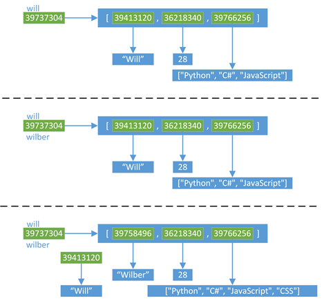
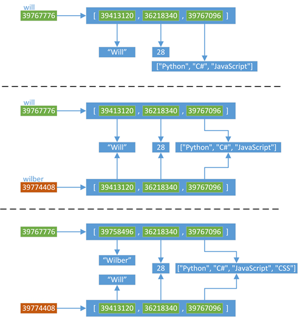

Python 编程思想
这里主要是比较深入 python 机制的内容
浅谈 Python 的 with 语句
with 语句是从 Python 2.5 开始引入的一种与异常处理相关的功能（2.5 版本中要通过 from __future__ import with_statement 导入后才可以使用），从 2.6 版本开始缺省可用（参考 What's new in Python 2.6? 中 with 语句相关部分介绍）。with 语句适用于对资源进行访问的场合，确保不管使用过程中是否发生异常都会执行必要的“清理”操作，释放资源，比如文件使用后自动关闭、线程中锁的自动获取和释放等。
术语
要使用 with 语句，首先要明白上下文管理器这一概念。有了上下文管理器，with 语句才能工作。
下面是一组与上下文管理器和with 语句有关的概念。
上下文管理协议（Context Management Protocol）：包含方法 __enter__() 和 __exit__()，支持该协议的对象要实现这两个方法。
上下文管理器（Context Manager）：支持上下文管理协议的对象，这种对象实现了
__enter__() 和 __exit__() 方法。上下文管理器定义执行 with 语句时要建立的运行时上下文，负责执行 with 语句块上下文中的进入与退出操作。通常使用 with 语句调用上下文管理器，也可以通过直接调用其方法来使用。
运行时上下文（runtime context）：由上下文管理器创建，通过上下文管理器的 __enter__() 和 __exit__() 方法实现，__enter__() 方法在语句体执行之前进入运行时上下文，__exit__() 在语句体执行完后从运行时上下文退出。with 语句支持运行时上下文这一概念。
上下文表达式（Context Expression）：with 语句中跟在关键字 with 之后的表达式，该表达式要返回一个上下文管理器对象。
语句体（with-body）：with 语句包裹起来的代码块，在执行语句体之前会调用上下文管
理器的 __enter__() 方法，执行完语句体之后会执行 __exit__() 方法。
基本语法和工作原理
with 语句的语法格式如下：
with context_expression [as target(s)]:
with-body
这里 context_expression 要返回一个上下文管理器对象，该对象并不赋值给 as 子句中的 target(s) ，如果指定了 as 子句的话，会将上下文管理器的 __enter__() 方法的返回值赋值给 target(s)。target(s) 可以是单个变量，或者由“()”括起来的元组（不能是仅仅由“,”分隔的变量列表，必须加“()”）。
Python 对一些内建对象进行改进，加入了对上下文管理器的支持，可以用于 with 语句中，比如可以自动关闭文件、线程锁的自动获取和释放等。假设要对一个文件进行操作，使用 with 语句可以有如下代码：
with open(r'somefileName') as somefile:
for line in somefile:
print line
# ...more code
这里使用了 with 语句，不管在处理文件过程中是否发生异常，都能保证 with 语句执行完毕后已经关闭了打开的文件句柄。如果使用传统的 try/finally 范式，则要使用类似如下代码：
somefile = open(r'somefileName')
try:
for line in somefile:
print line
# ...more code
finally:
somefile.close()
比较起来，使用 with 语句可以减少编码量。已经加入对上下文管理协议支持的还有模块 threading、decimal 等。
PEP 0343 对 with 语句的实现进行了描述。with 语句的执行过程类似如下代码块：
context_manager = context_expression
exit = type(context_manager).__exit__
value = type(context_manager).__enter__(context_manager)
exc = True # True 表示正常执行，即便有异常也忽略；False 表示重新抛出异常，需要对异常进行处理
try:
try:
target = value # 如果使用了 as 子句
with-body # 执行 with-body
except:
# 执行过程中有异常发生
exc = False
# 如果 __exit__ 返回 True，则异常被忽略；如果返回 False，则重新抛出异常
# 由外层代码对异常进行处理
if not exit(context_manager, *sys.exc_info()):
raise
finally:
# 正常退出，或者通过 statement-body 中的 break/continue/return 语句退出
# 或者忽略异常退出
if exc:
exit(context_manager, None, None, None)
# 缺省返回 None，None 在布尔上下文中看做是 False
- 执行 contextexpression，生成上下文管理器 contextmanager
- 调用上下文管理器的
__enter__()方法；如果使用了 as 子句，则将__enter__()方法的返回值赋值给 as 子句中的 target(s) - 执行语句体 with-body
- 不管是否执行过程中是否发生了异常，执行上下文管理器的
__exit__()方法，__exit__()方法负责执行“清理”工作，如释放资源等。如果执行过程中没有出现异常，或者语句体中执行了语句 break/continue/return，则以 None 作为参数调用__exit__(None, None, None)；如果执行过程中出现异常，则使用 sys.exc_info 得到的异常信息为参数调用__exit__(exc_type, exc_value, exc_traceback) - 出现异常时，如果
__exit__(type, value, traceback)返回 False，则会重新抛出异常，让with 之外的语句逻辑来处理异常，这也是通用做法；如果返回 True，则忽略异常，不再对异常进行处理
自定义上下文管理器
开发人员可以自定义支持上下文管理协议的类。自定义的上下文管理器要实现上下文管理协议所需要的 __enter__() 和 __exit__() 两个方法：
context_manager.__enter__()：进入上下文管理器的运行时上下文，在语句体执行前调用。with 语句将该方法的返回值赋值给 as 子句中的 target，如果指定了 as 子句的话context_manager.__exit__(exc_type, exc_value, exc_traceback)：退出与上下文管理器相关的运行时上下文，返回一个布尔值表示是否对发生的异常进行处理。参数表示引起退出操作的异常，如果退出时没有发生异常，则3个参数都为None。如果发生异常，返回 True 表示不处理异常，否则会在退出该方法后重新抛出异常以由 with 语句之外的代码逻辑进行处理。如果该方法内部产生异常，则会取代由 statement-body 中语句产生的异常。要处理异常时，不要显示重新抛出异常，即不能重新抛出通过参数传递进来的异常，只需要将返回值设置为 False 就可以了。之后，上下文管理代码会检测是否__exit__()失败来处理异常
下面通过一个简单的示例来演示如何构建自定义的上下文管理器。注意，上下文管理器必须同时提供 __enter__() 和 __exit__() 方法的定义，缺少任何一个都会导致 AttributeError；with 语句会先检查是否提供了 __exit__() 方法，然后检查是否定义了 __enter__() 方法。
假设有一个资源 DummyResource，这种资源需要在访问前先分配，使用完后再释放掉；分配操作可以放到 __enter__()方法中，释放操作可以放到 __exit__() 方法中。简单起见，这里只通过打印语句来表明当前的操作，并没有实际的资源分配与释放。
class DummyResource:
def __init__(self, tag):
self.tag = tag
print 'Resource [%s]' % tag
def __enter__(self):
print '[Enter %s]: Allocate resource.' % self.tag
return self # 可以返回不同的对象
def __exit__(self, exc_type, exc_value, exc_tb):
print '[Exit %s]: Free resource.' % self.tag
if exc_tb is None:
print '[Exit %s]: Exited without exception.' % self.tag
else:
print '[Exit %s]: Exited with exception raised.' % self.tag
return False # 可以省略，缺省的None也是被看做是False
DummyResource 中的 __enter__() 返回的是自身的引用，这个引用可以赋值给 as 子句中的 target 变量；返回值的类型可以根据实际需要设置为不同的类型，不必是上下文管理器对象本身。
__exit__() 方法中对变量 exc_tb 进行检测，如果不为 None，表示发生了异常，返回 False 表示需要由外部代码逻辑对异常进行处理；注意到如果没有发生异常，缺省的返回值为 None，在布尔环境中也是被看做 False，但是由于没有异常发生，__exit__() 的三个参数都为 None，上下文管理代码可以检测这种情况，做正常处理。
下面在 with 语句中访问 DummyResource ：
with DummyResource('Normal'):
print '[with-body] Run without exceptions.'
with DummyResource('With-Exception'):
print '[with-body] Run with exception.'
raise Exception
print '[with-body] Run with exception. Failed to finish statement-body!'
第1个 with 语句的执行结果如下：
Resource [Normal]
[Enter Normal]: Allocate resource.
[with-body] Run without exceptions.
[Exit Normal]: Free resource.
[Exit Normal]: Exited without exception.
可以看到，正常执行时会先执行完语句体 with-body，然后执行 __exit__() 方法释放资源。
第2个 with 语句的执行结果如下：
Resource [With-Exception]
[Enter With-Exception]: Allocate resource.
[with-body] Run with exception.
[Exit With-Exception]: Free resource.
[Exit With-Exception]: Exited with exception raised.
Traceback (most recent call last):
File "G:/demo", line 20, in <module>
raise Exception
Exception
可以看到，with-body 中发生异常时with-body 并没有执行完，但资源会保证被释放掉，同时产生的异常由 with 语句之外的代码逻辑来捕获处理。
可以自定义上下文管理器来对软件系统中的资源进行管理，比如数据库连接、共享资源的访问控制等。Python 在线文档 Writing Context Managers 提供了一个针对数据库连接进行管理的上下文管理器的简单范例。
contextlib 模块
contextlib 模块提供了3个对象：装饰器 contextmanager、函数 nested 和上下文管理器 closing。使用这些对象，可以对已有的生成器函数或者对象进行包装，加入对上下文管理协议的支持，避免了专门编写上下文管理器来支持 with 语句。
装饰器 contextmanager
contextmanager 用于对生成器函数进行装饰，生成器函数被装饰以后，返回的是一个上下文管理器，其 __enter__() 和 __exit__() 方法由 contextmanager 负责提供，而不再是之前的迭代子。被装饰的生成器函数只能产生一个值，否则会导致异常 RuntimeError；产生的值会赋值给 as 子句中的 target，如果使用了 as 子句的话。下面看一个简单的例子。
from contextlib import contextmanager
@contextmanager
def demo():
print '[Allocate resources]'
print 'Code before yield-statement executes in __enter__'
yield '*** contextmanager demo ***'
print 'Code after yield-statement executes in __exit__'
print '[Free resources]'
with demo() as value:
print 'Assigned Value: %s' % value
结果输出如下：
[Allocate resources]
Code before yield-statement executes in __enter__
Assigned Value: *** contextmanager demo ***
Code after yield-statement executes in __exit__
[Free resources]
可以看到，生成器函数中 yield 之前的语句在 __enter__() 方法中执行，yield 之后的语句在 __exit__() 中执行，而 yield 产生的值赋给了 as 子句中的 value 变量。
需要注意的是，contextmanager 只是省略了 __enter__() / __exit__() 的编写，但并不负责实现资源的“获取”和“清理”工作；“获取”操作需要定义在 yield 语句之前，“清理”操作需要定义 yield 语句之后，这样 with 语句在执行 __enter__() / __exit__() 方法时会执行这些语句以获取/释放资源，即生成器函数中需要实现必要的逻辑控制，包括资源访问出现错误时抛出适当的异常。
函数 nested
nested 可以将多个上下文管理器组织在一起，避免使用嵌套 with 语句。
with nested(A(), B(), C()) as (X, Y, Z):
# with-body code here
类似于：
with A() as X:
with B() as Y:
with C() as Z:
# with-body code here
需要注意的是，发生异常后，如果某个上下文管理器的 __exit__() 方法对异常处理返回 False，则更外层的上下文管理器不会监测到异常。
上下文管理器 closing
closing 的实现如下：
class closing(object):
# help doc here
def __init__(self, thing):
self.thing = thing
def __enter__(self):
return self.thing
def __exit__(self, *exc_info):
self.thing.close()
上下文管理器会将包装的对象赋值给 as 子句的 target 变量，同时保证打开的对象在 with-body 执行完后会关闭掉。closing 上下文管理器包装起来的对象必须提供 close() 方法的定义，否则执行时会报 AttributeError 错误。
class ClosingDemo(object):
def __init__(self):
self.acquire()
def acquire(self):
print 'Acquire resources.'
def free(self):
print 'Clean up any resources acquired.'
def close(self):
self.free()
with closing(ClosingDemo()):
print 'Using resources'
结果输出如下：
Acquire resources.
Using resources
Clean up any resources acquired.
closing 适用于提供了 close() 实现的对象，比如网络连接、数据库连接等，也可以在自定义类时通过接口 close() 来执行所需要的资源“清理”工作。
Python程序的执行原理
过程概述
Python先把代码(.py文件)编译成字节码，交给字节码虚拟机，然后虚拟机一条一条执行字节码指令，从而完成程序的执行。
字节码
字节码在Python虚拟机程序里对应的是PyCodeObject对象。
.pyc文件是字节码在磁盘上的表现形式。
pyc文件
PyCodeObject对象的创建时机是模块加载的时候，即import。
Python test.py会对test.py进行编译成字节码并解释执行，但是不会生成test.pyc。
如果test.py加载了其他模块，如import util，Python会对util.py进行编译成字节码，生成util.pyc，然后对字节码解释执行。
如果想生成test.pyc，我们可以使用Python内置模块py_compile来编译。
加载模块时，如果同时存在.py和.pyc，Python会尝试使用.pyc，如果.pyc的编译时间早于.py的修改时间，则重新编译.py并更新.pyc。
PyCodeObject
Python代码的编译结果就是PyCodeObject对象。
typedef struct {
PyObject_HEAD
int co_argcount; /* 位置参数个数 */
int co_nlocals; /* 局部变量个数 */
int co_stacksize; /* 栈大小 */
int co_flags;
PyObject *co_code; /* 字节码指令序列 */
PyObject *co_consts; /* 所有常量集合 */
PyObject *co_names; /* 所有符号名称集合 */
PyObject *co_varnames; /* 局部变量名称集合 */
PyObject *co_freevars; /* 闭包用的的变量名集合 */
PyObject *co_cellvars; /* 内部嵌套函数引用的变量名集合 */
/* The rest doesn’t count for hash/cmp */
PyObject *co_filename; /* 代码所在文件名 */
PyObject *co_name; /* 模块名|函数名|类名 */
int co_firstlineno; /* 代码块在文件中的起始行号 */
PyObject *co_lnotab; /* 字节码指令和行号的对应关系 */
void *co_zombieframe; /* for optimization only (see frameobject.c) */
} PyCodeObject;
pyc文件格式
加载模块时，模块对应的PyCodeObject对象被写入.pyc文件，格式如下：
分析字节码
解析PyCodeObject
Python提供了内置函数compile可以编译Python代码和查看PyCodeObject对象，如下：
s = ”hello”
def func():
print s
func()
在Python交互式shell里编译代码得到PyCodeObject对象:
dir(co)已经列出co的各个域，想查看某个域直接在终端输出即可：
test.py的PyCodeObject
co.co_argcount 0
co.co_nlocals 0
co.co_names (‘s’, ’func’)
co.co_varnames (‘s’, ’func’)
co.co_consts (‘hello’, <code object func at 0x2aaeeec57110, file ”test.py”, line 3>, None)
co.co_code ’d\x00\x00Z\x00\x00d\x01\x00\x84\x00\x00Z\x01\x00e\x01\x00\x83\x00\x00\x01d\x02\x00S’
Python解释器会为函数也生成的字节码PyCodeObject对象，见上面的co_consts[1]
func的PyCodeObject
func.co_argcount 0
func.co_nlocals 0
func.co_names (‘s’,)
func.co_varnames ()
func.co_consts (None,)
func.co_code ‘t\x00\x00GHd\x00\x00S’
co_code是指令序列，是一串二进制流，它的格式和解析方法见6.2。
解析指令序列
指令序列co_code的格式
opcode oparg opcode opcode oparg …
1 byte 2 bytes 1 byte 1 byte 2 bytes
Python内置的dis模块可以解析co_code，如下图：
test.py的指令序列
func函数的指令序列
第一列表示以下几个指令在py文件中的行号;
第二列是该指令在指令序列co_code里的偏移量;
第三列是指令opcode的名称，分为有操作数和无操作数两种，opcode在指令序列中是一个字节的整数;
第四列是操作数oparg，在指令序列中占两个字节，基本都是coconsts或者conames的下标;
第五列带括号的是操作数说明。
执行字节码
Python虚拟机的原理就是模拟可执行程序再X86机器上的运行，X86的运行时栈帧如下图：

假如test.py用C语言来实现，会是下面这个样子：
const char *s = “hello”;
void func() {
printf(“%s\n”, s);
}
int main() {
func();
return 0;
}
Python虚拟机的原理就是模拟上述行为。当发生函数调用时，创建新的栈帧，对应Python的实现就是PyFrameObject对象。
PyFrameObject
typedef struct _frame {
PyObject_VAR_HEAD
struct _frame *f_back; /* 调用者的帧 */
PyCodeObject *f_code; /* 帧对应的字节码对象 */
PyObject *f_builtins; /* 内置名字空间 */
PyObject *f_globals; /* 全局名字空间 */
PyObject *f_locals; /* 本地名字空间 */
PyObject **f_valuestack; /* 运行时栈底 */
PyObject **f_stacktop; /* 运行时栈顶 */
…….
}
那么对应Python的运行时栈就是这样子：
执行指令
执行test.py的字节码时，会先创建一个栈帧，以下用f表示当前栈帧，执行过程注释如下：
test.py的符号名集合和常量集合
co.co_names (‘s’, ’func’)
co.co_consts (‘hello’, <code object func at 0x2aaeeec57110, file ”test.py”, line 3>, None)
test.py的指令序列
上面的CALL_FUNCTION指令执行时，会创建新的栈帧，并执行func的字节码指令，以下用f表示当前栈帧，func的字节码执行过程如下：
func函数的符号名集合和常量集合
func.co_names (‘s’,)
func.co_consts (None,)
func函数的指令序列
查看栈帧
如果你想查看当前栈帧，Python提供了sys._getframe()方法可以获取当前栈帧，你只需要在代码里加入代码如下：
def func():
import sys
frame = sys._getframe()
print frame.f_locals
print frame.f_globals
print frame.f_back.f_locals
#你可以打印frame的各个域
print s
Python 黑魔法
Python 多继承
In [1]: class A(object):
...: def foo(self):
...: print("class A")
...:
In [2]: class B(object):
...: def foo(self):
...: print("class B")
...:
In [3]: class C(A, B):
...: pass
...:
In [4]: C().foo()
class A # 例子很好懂, C继承了A和B，从左到右,发现A有foo方法,返回了
看起来都是很简单, 有次序的从底向上,从前向后找,找到就返回. 再看例子:
In [5]: class A(object):
...: def foo(self):
...: print("class A")
...:
In [6]: class B(A):
...: pass
...:
In [7]: class C(A):
...: def foo(self):
...: print("class C")
...:
In [8]: class D(B,C):
...: pass
...:
In [9]: D().foo()
class C # ? 按道理, 顺序是 D->B->A,为什么找到了C哪去了
这也就涉及了MRO(Method Resolution Order):
In [10]: D.__mro__
Out[10]: (__main__.D, __main__.B, __main__.C, __main__.A, object)
简单的理解其实就是新式类是广度优先了， D->B, 但是发现C也是继承A，就先找C，最后再去找A
列表的+和+=, append和extend
In [17]: print('ID:', id(a_list))
('ID:', 4481323592)
In [18]: a_list += [1]
In [19]: print('ID (+=):', id(a_list))
('ID (+=):', 4481323592) # 使用+= 还是在原来的列表上操作
In [20]: a_list = a_list + [2]
In [21]: print('ID (list = list + ...):', id(a_list))
('ID (list = list + ...):', 4481293056) # 简单的+其实已经改变了原有列表
In [28]: a_list = []
In [29]: id(a_list)
Out[29]: 4481326976
In [30]: a_list.append(1)
In [31]: id(a_list)
Out[31]: 4481326976 # append 是在原有列表添加
In [32]: a_list.extend([2])
In [33]: id(a_list)
Out[33]: 4481326976 # extend 也是在原有列表上添加
datetime也有布尔值
In [34]: import datetime
In [35]: print('"datetime.time(0,0,0)" (Midnight) ->', bool(datetime.time(0,0,0)))
('"datetime.time(0,0,0)" (Midnight) ->', False)
In [36]: print('"datetime.time(1,0,0)" (1 am) ->', bool(datetime.time(1,0,0)))
('"datetime.time(1,0,0)" (1 am) ->', True)
’==’ 和 is 的区别
我的理解是”is”是判断2个对象的身份, ==是判断2个对象的值
In [37]: a = 1
In [38]: b = 1
In [39]: print('a is b', bool(a is b))
('a is b', True)
In [40]: c = 999
In [41]: d = 999
In [42]: print('c is d', bool(c is d))
('c is d', False) # 原因是python的内存管理,缓存了-5 - 256的对象
In [43]: print('256 is 257-1', 256 is 257-1)
('256 is 257-1', True)
In [44]: print('257 is 258-1', 257 is 258 - 1)
('257 is 258-1', False)
In [45]: print('-5 is -6+1', -5 is -6+1)
('-5 is -6+1', True)
In [46]: print('-7 is -6-1', -7 is -6-1)
('-7 is -6-1', False)
In [47]: a = 'hello world!'
In [48]: b = 'hello world!'
In [49]: print('a is b,', a is b)
('a is b,', False) # 很明显 他们没有被缓存,这是2个字段串的对象
In [50]: print('a == b,', a == b)
('a == b,', True) # 但他们的值相同
# But, 有个特例
In [51]: a = float('nan')
In [52]: print('a is a,', a is a)
('a is a,', True)
In [53]: print('a == a,', a == a)
('a == a,', False) # 亮瞎我眼睛了~
bool其实是int的子类
In [97]: isinstance(True, int)
Out[97]: True
In [98]: True + True
Out[98]: 2
In [99]: 3 * True + True
Out[99]: 4
In [100]: 3 * True - False
Out[100]: 3
In [104]: True << 10
Out[104]: 1024
元组是不是真的不可变?
In [111]: tup = ([],)
In [112]: tup[0] += [1]
---------------------------------------------------------------------------
TypeError Traceback (most recent call last)
<ipython-input-112-d4f292cf35de> in <module>()
----> 1 tup[0] += [1]
TypeError: 'tuple' object does not support item assignment
In [113]: tup
Out[113]: ([1],) # 我靠 又是亮瞎我眼睛,明明抛了异常 还能修改?
In [114]: tup = ([],)
In [115]: tup[0].extend([1])
In [116]: tup[0]
Out[116]: [1] # 好吧,我有点看明白了, 虽然我不能直接操作元组，但是不能阻止我操作元组中可变的子对象(list)
+= 是一个特例
In [117]: my_tup = (1,)
In [118]: my_tup += (4,)
In [119]: my_tup = my_tup + (5,)
In [120]: my_tup
Out[120]: (1, 4, 5) # ? 嗯 不是不能操作元组嘛?
In [121]: my_tup = (1,)
In [122]: print(id(my_tup))
4481317904
In [123]: my_tup += (4,)
In [124]: print(id(my_tup))
4480606864 # 操作的不是原来的元组 所以可以
In [125]: my_tup = my_tup + (5,)
In [126]: print(id(my_tup))
4474234912
异常处理加 else
In [150]: try:
.....: print('third element:', a_list[2])
.....: except IndexError:
.....: print('raised IndexError')
.....: else:
.....: print('no error in try-block') # 只有在try里面没有异常的时候才会执行else里面的表达式
.....:
raised IndexError # 抛异常了 没完全完成
In [153]: i = 0
In [154]: while i < 2:
.....: print(i)
.....: i += 1
.....: else:
.....: print('in else')
.....:
0
1
in else # while也支持哦~
In [155]: i = 0
In [156]: while i < 2:
.....: print(i)
.....: i += 1
.....: break
.....: else:
.....: print('completed while-loop')
.....:
0 # 被break了 没有完全执行完 就不执行else里面的了
In [158]: for i in range(2):
.....: print(i)
.....: else:
.....: print('completed for-loop')
.....:
0
1
completed for-loop
In [159]: for i in range(2):
.....: print(i)
.....: break
.....: else:
.....: print('completed for-loop')
.....:
0 # 也是因为break了
深拷贝与浅拷贝
对象赋值
Python中，对象的赋值，拷贝（深/浅拷贝）之间是有差异的，如果使用的时候不注意，就可能产生意外的结果。
直接看一段代码
will = ["Will", 28, ["Python", "C#", "JavaScript"]]
wilber = will
print id(will)
print will
print [id(ele) for ele in will]
print id(wilber)
print wilber
print [id(ele) for ele in wilber]
will[0] = "Wilber"
will[2].append("CSS")
print id(will)
print will
print [id(ele) for ele in will]
print id(wilber)
print wilber
print [id(ele) for ele in wilber]

下面来分析一下这段代码：
- 首先，创建了一个名为will的变量，这个变量指向一个list对象，从第一张图中可以看到所有对象的地址（每次运行，结果可能不同）
- 然后，通过will变量对wilber变量进行赋值，那么wilber变量将指向will变量对应的对象（内存地址），也就是说
wilber is will
，wilber[i] is will[i]
- 可以理解为，Python中，对象的赋值都是进行对象引用（内存地址）传递
第三张图中，由于will和wilber指向同一个对象，所以对will的任何修改都会体现在wilber上
这里需要注意的一点是，str是不可变类型，所以当修改的时候会替换旧的对象，产生一个新的地址39758496

浅拷贝
下面就来看看浅拷贝的结果：
import copy
will = ["Will", 28, ["Python", "C#", "JavaScript"]]
wilber = copy.copy(will)
print id(will)
print will
print [id(ele) for ele in will]
print id(wilber)
print wilber
print [id(ele) for ele in wilber]
will[0] = "Wilber"
will[2].append("CSS")
print id(will)
print will
print [id(ele) for ele in will]
print id(wilber)
print wilber
print [id(ele) for ele in wilber]
代码结果为：
分析一下这段代码：
- 首先，依然使用一个will变量，指向一个list类型的对象
- 然后，通过copy模块里面的浅拷贝函数copy()，对will指向的对象进行浅拷贝，然后浅拷贝生成的新对象赋值给wilber变量
- 浅拷贝会创建一个新的对象，这个例子中
wilber is not will
- 但是，对于对象中的元素，浅拷贝就只会使用原始元素的引用（内存地址），也就是说
wilber[i] is will[i]
- 浅拷贝会创建一个新的对象，这个例子中
- 当对will进行修改的时候
- 由于list的第一个元素是不可变类型，所以will对应的list的第一个元素会使用一个新的对象39758496
- 但是list的第三个元素是一个可变类型，修改操作不会产生新的对象，所以will的修改结果会相应的反应到wilber上

总结一下，当我们使用下面的操作的时候，会产生浅拷贝的效果：
- 使用切片[:]操作
- 使用工厂函数（如list/dir/set）
- 使用copy模块中的copy()函数
深拷贝
最后来看看深拷贝：
import copy
will = ["Will", 28, ["Python", "C#", "JavaScript"]]
wilber = copy.deepcopy(will)
print id(will)
print will
print [id(ele) for ele in will]
print id(wilber)
print wilber
print [id(ele) for ele in wilber]
will[0] = "Wilber"
will[2].append("CSS")
print id(will)
print will
print [id(ele) for ele in will]
print id(wilber)
print wilber
print [id(ele) for ele in wilber]
代码的结果为：

分析一下这段代码：
- 首先，同样使用一个will变量，指向一个list类型的对象
- 然后，通过copy模块里面的深拷贝函数deepcopy()，对will指向的对象进行深拷贝，然后深拷贝生成的新对象赋值给wilber变量
- 跟浅拷贝类似，深拷贝也会创建一个新的对象，这个例子中
wilber is not will
- 但是，对于对象中的元素，深拷贝都会重新生成一份（有特殊情况，下面会说明），而不是简单的使用原始元素的引用（内存地址）
- 例子中will的第三个元素指向39737304，而wilber的第三个元素是一个全新的对象39773088，也就是说，
wilber[2] is not will[2]
- 跟浅拷贝类似，深拷贝也会创建一个新的对象，这个例子中
- 当对will进行修改的时候
- 由于list的第一个元素是不可变类型，所以will对应的list的第一个元素会使用一个新的对象39758496
- 但是list的第三个元素是一个可变类型，修改操作不会产生新的对象，但是由于
wilber[2] is not will[2]
，所以will的修改不会影响wilber

拷贝的特殊情况
其实，对于拷贝有一些特殊情况：
- 对于非容器类型（如数字、字符串、和其他'原子'类型的对象）没有拷贝这一说
- 也就是说，对于这些类型，
obj is copy.copy(obj)
、obj is copy.deepcopy(obj)
- 也就是说，对于这些类型，
- 如果元组变量只包含原子类型对象，则不能深拷贝，看下面的例子

总结
本文介绍了对象的赋值和拷贝，以及它们之间的差异：
- Python中对象的赋值都是进行对象引用（内存地址）传递
- 使用copy.copy()，可以进行对象的浅拷贝，它复制了对象，但对于对象中的元素，依然使用原始的引用.
- 如果需要复制一个容器对象，以及它里面的所有元素（包含元素的子元素），可以使用copy.deepcopy()进行深拷贝
- 对于非容器类型（如数字、字符串、和其他'原子'类型的对象）没有被拷贝一说
- 如果元组变量只包含原子类型对象，则不能深拷贝，看下面的例子
Python 中 self 的含义
刚开始学习Python的类写法的时候觉得很是麻烦，为什么定义时需要而调用时又不需要，为什么不能内部简化从而减少我们敲击键盘的次数？
self代表类的实例，而非类。
实例来说明
class Test:
def prt(self):
print(self)
print(self.__class__)
t = Test()
t.prt()
执行结果如下
<__main__.Test object at 0x000000000284E080>
<class '__main__.Test'>
从上面的例子中可以很明显的看出，self代表的是类的实例。而self.class则指向类。
self不必非写成self
有很多童鞋是先学习别的语言然后学习Python的，所以总觉得self怪怪的，想写成this，可以吗？
当然可以，还是把上面的代码改写一下。
class Test:
def prt(this):
print(this)
print(this.__class__)
t = Test()
t.prt()
改成this后，运行结果完全一样。
当然，最好还是尊重约定俗成的习惯，使用self。
self可以不写吗
在Python的解释器内部，当我们调用t.prt()时，实际上Python解释成Test.prt(t)，也就是说把self替换成类的实例。
有兴趣的童鞋可以把上面的t.prt()一行改写一下，运行后的实际结果完全相同。
实际上已经部分说明了self在定义时不可以省略，如果非要试一下，那么请看下面：
class Test:
def prt():
print(self)
t = Test()
t.prt()
运行时提醒错误如下：prt在定义时没有参数，但是我们运行时强行传了一个参数。
由于上面解释过了t.prt()等同于Test.prt(t)，所以程序提醒我们多传了一个参数t。
Traceback (most recent call last):
File "h.py", line 6, in <module>
t.prt()
TypeError: prt() takes 0 positional arguments but 1 was given
当然，如果我们的定义和调用时均不传类实例是可以的，这就是类方法。
class Test:
def prt():
print(__class__)
Test.prt()
运行结果如下
<class '__main__.Test'>
在继承时，传入的是哪个实例，就是那个传入的实例，而不是指定义了self的类的实例。
先看代码
class Parent:
def pprt(self):
print(self)
class Child(Parent):
def cprt(self):
print(self)
c = Child()
c.cprt()
c.pprt()
p = Parent()
p.pprt()
运行结果如下
<__main__.Child object at 0x0000000002A47080>
<__main__.Child object at 0x0000000002A47080>
<__main__.Parent object at 0x0000000002A47240>
解释：
运行c.cprt()时应该没有理解问题，指的是Child类的实例。
但是在运行c.pprt()时，等同于Child.pprt(c)，所以self指的依然是Child类的实例，由于self中没有定义pprt()方法，所以沿着继承树往上找，发现在父类Parent中定义了pprt()方法，所以就会成功调用。
在描述符类中，self指的是描述符类的实例
不太容易理解，先看实例：
class Desc:
def __get__(self, ins, cls):
print('self in Desc: %s ' % self )
print(self, ins, cls)
class Test:
x = Desc()
def prt(self):
print('self in Test: %s' % self)
t = Test()
t.prt()
t.x
运行结果如下：
self in Test: <__main__.Test object at 0x0000000002A570B8>
self in Desc: <__main__.Desc object at 0x000000000283E208>
<__main__.Desc object at 0x000000000283E208> <__main__.Test object at 0x0000000002A570B8> <class '__main__.Test'>
大部分童鞋开始有疑问了，为什么在Desc类中定义的self不是应该是调用它的实例t吗？怎么变成了Desc类的实例了呢？
注意：此处需要睁大眼睛看清楚了，这里调用的是t.x，也就是说是Test类的实例t的属性x，由于实例t中并没有定义属性x，所以找到了类属性x，而该属性是描述符属性，为Desc类的实例而已，所以此处并没有顶用Test的任何方法。
那么我们如果直接通过类来调用属性x也可以得到相同的结果。
下面是把t.x改为Test.x运行的结果。
self in Test: <__main__.Test object at 0x00000000022570B8>
self in Desc: <__main__.Desc object at 0x000000000223E208>
<__main__.Desc object at 0x000000000223E208> None <class '__main__.Test'>
题外话：由于在很多时候描述符类中仍然需要知道调用该描述符的实例是谁，所以在描述符类中存在第二个参数ins，用来表示调用它的类实例，所以t.x时可以看到第三行中的运行结果中第二项为
总结
- self在定义时需要定义，但是在调用时会自动传入。
- self的名字并不是规定死的，但是最好还是按照约定是用self
- self总是指调用时的类的实例。
Python 类库引入机制
首先，看一个简单的例子：
"""
目录结构如下：
├── __init__.py
├── main.py
└── string.py
"""
# main.py 内容如下
import string
print string.a
# string.py 内容如下
a = 2
现在，考虑一下：
- 当我们执行main.py的时候，会发生什么事情？
- 在main.py文件执行到
import string的时候，解释器导入的string类库是当前文件夹下的string.py还是系统标准库的string.py呢？ - 如果明确的指明⾃己要引⼊的类库？
为了搞清楚上面的问题，我们需要了解关于Python类库引入的机制。
Python 提供了二种引入机制：
- relative import
- absolute import
relative import
relative import 也叫作相对引入，在Python2.5及之前是默认的引入方法。它的使用方法如下：
from .string import a
from ..string import a
from ...string import a
这种引入方式使用一个点号来标识引入类库的精确位置。与linux的相对路径表示相似，一个点表示当前目录，每多一个点号则代表向上一层目录。
"""
├── __init__.py
├── foo.py
└── main.py
"""
# foo.py
a = 2
# main.py
print __name__
from .foo import a
print a
相对引入，那么我们需要知道相对什么来引入。相对引入使用被引入文件的__name__属性来决定该文件在整个包结构的位置。那么如果文件的__name__没有包含任何包的信息，例如__name__被设置为了__main__，则认为其为‘top level script'，而不管该文件的位置，这个时候相对引入就没有引入的参考物。如上面的程序所示，当我们执行python main.py时，Python解释器会抛出 ValueError: Attempted relative import in non-package的异常。
为了解决这个问题，PEP 0366 -- Main module explicit relative imports提出了一个解决方案。允许用户使用python -m ex2.main的方式,来执行该文件。在这个方案下，引入了一个新的属性__package__。
╭─liuchang@localhost ~/Codes/pycon
╰─$ cat ex2/main.py
print __name__
print __package__
from .foo import a
print a
╭─liuchang@localhost ~/Codes/pycon
╰─$ python -m ex2.main
__main__
ex2
2
absolute import
absolute import 也叫作完全引入，非常类似于Java的引入进制，在Python2.5被完全实现，但是是需要通过from __future__ import absolute_import来打开该引入进制。在Python2.6之后以及Python3，完全引用成为Python的默认的引入机制。它的使用方法如下：
from pkg import foo
from pkg.moduleA import foo
要注意的是，需要从包目录最顶层目录依次写下，而不能从中间开始。
在使用该引入方式时，我们碰到比较多的问题就是因为位置原因，Python找不到相应的库文件，抛出ImportError的异常。让我们看一个完全引用的例子:
"""
ex3
├── __init__.py
├── foo.py
└── main.py
"""
# foo.py
a = 2
# main.py
print __name__
print __package__
from ex2.foo import a
print a
我们尝试着去运行main.py文件，Python解释器会抛出ImportError。那么我们如何解决这个问题呢？
╰─$ python ex3/main.py
__main__
None
Traceback (most recent call last):
File "ex3/main.py", line 3, in <module>
from ex2.foo import a
ImportError: No module named ex2.foo
首先，我们也可以使用前文所述的module的方式去运行程序，通过-m参数来告诉解释器__package__属性。如下：
╭─liuchang@liuchangdeMacBook-Pro ~/Codes/pycon
╰─$ python -m ex3.main
__main__
ex3
2
另外，我们还有一个办法可以解决该问题，在描述之前，我们介绍一个关于Python的非常有用的小知识：Python解释器会自动将当前工作目录添加到PYTHONPATH。如下所示，可以看到我们打印出的sys.path已经包含了当前工作目录。
╭─liuchang@liuchangdeMacBook-Pro ~/Codes/pycon/ex4
╰─$ cat main.py
import sys
print sys.path
╭─liuchang@liuchangdeMacBook-Pro ~/Codes/pycon/ex4
╰─$ python main.py
['/Users/liuchang/Codes/pycon/ex4', '/Library/Python/2.7/site-packages/pip-7.1.0-py2.7.egg', '/Library/Python/2.7/site-packages/mesos-_PACKAGE_VERSION_-py2.7.egg', '/System/Library/Frameworks/Python.framework/Versions/2.7/lib/python27.zip', '/System/Library/Frameworks/Python.framework/Versions/2.7/lib/python2.7', '/System/Library/Frameworks/Python.framework/Versions/2.7/lib/python2.7/plat-darwin', '/System/Library/Frameworks/Python.framework/Versions/2.7/lib/python2.7/plat-mac', '/System/Library/Frameworks/Python.framework/Versions/2.7/lib/python2.7/plat-mac/lib-scriptpackages', '/System/Library/Frameworks/Python.framework/Versions/2.7/Extras/lib/python', '/System/Library/Frameworks/Python.framework/Versions/2.7/lib/python2.7/lib-tk', '/System/Library/Frameworks/Python.framework/Versions/2.7/lib/python2.7/lib-old', '/System/Library/Frameworks/Python.framework/Versions/2.7/lib/python2.7/lib-dynload', '/Users/liuchang/Library/Python/2.7/lib/python/site-packages', '/usr/local/lib/python2.7/site-packages', '/System/Library/Frameworks/Python.framework/Versions/2.7/Extras/lib/python/PyObjC', '/Library/Python/2.7/site-packages']
了解了Python解释器的这个特性后，我们就可以解决完全引用的找不到类库的问题：执行的时候，让解释器自动的将类库的目录添加到PYTHONPATH中。
我们可以在顶层目录中添加一个run_ex3.py的文件，文件内容和运行结果如下，可以看到Python解释器正确的执行了ex3.main文件。
╭─liuchang@liuchangdeMacBook-Pro ~/Codes/pycon
╰─$ cat run_ex3.py
from ex3 import main
╭─liuchang@liuchangdeMacBook-Pro ~/Codes/pycon
╰─$ python run_ex3.py
ex3.main
None
2
相对引用还是绝对引用？
上面介绍了Python的两种引用方式，都可以解决引入歧义的问题。那我们应该使用哪一种呢？
先说明一下Python的默认引用方式，在Python2.4及之前，Python只有相对引用这一种方式，在Python2.5中实现了绝对引用，但默认没有打开，需要用户自己指定使用该引用方式。在之后的版本和Python3版本，绝对引用已经成为默认的引用方式。
其次，二种引用方式各有利弊。绝对引用代码更加清晰明了，可以清楚的看到引入的包名和层次，但是，当包名修改的时候，我们需要手动修改所有的引用代码。相对引用则比较精简，不会被包名修改所影响，但是可读性较差，不如完全引用清晰。
最后，对于两种引用的方式选择，还是有争论的。在PEP8中，Python官方推荐的是绝对引用,详细理由可以参考这儿。
Absolute imports are recommended, as they are usually more readable and tend to be better behaved (or at least give better error messages) if the import system is incorrectly configured (such as when a directory inside a package ends up on sys.path ):
python
import mypkg.sibling
from mypkg import sibling
from mypkg.sibling import example
However, explicit relative imports are an acceptable alternative to absolute imports, especially when dealing with complex package layouts where using absolute imports would be unnecessarily verbose:
python
from . import sibling
from .sibling import example
Standard library code should avoid complex package layouts and always use absolute imports.
Implicit relative imports should never be used and have been removed in Python 3.
规范打包发布
为了别人使用自己代码的方便，应该尽量使用规范的包分发机制。为自己的Python包编写正确的setup.py文件，添加相应的README.md文件。对于提供一些可执行命令的包，则可以使用 console_entrypoint 的机制来提供。因为打包和分发不是本文重点，不再详细叙述，大家可以查看官方文档。
使用virtualenv管理包依赖
在使用Python的时候，尽量使用virtualenv来管理项目，所有的项目从编写到运行都在特定的virtualenv中。并且为自己的项目生成正确的依赖描述文件。
pip freeze > requirements.txt
关于virtualenv的用法，可以参考我之前的一篇文章virtualenv教程。
Python import实现
Python 提供了 import 语句来实现类库的引用，下面我们详细介绍当执行了 import 语句的时候，内部究竟做了些什么事情。
当我们执行一行 from package import module as mymodule命令时，Python解释器会查找package这个包的module模块，并将该模块作为mymodule引入到当前的工作空间。所以import语句主要是做了二件事：
- 查找相应的module
- 加载module到local namespace
下面我们详细了解python是如何查找模块的。
查找module的过程
在import的第一个阶段，主要是完成了查找要引入模块的功能，这个查找的过程如下：
- 检查 sys.modules (保存了之前import的类库的缓存），如果module被找到，则⾛到第二步。
- 检查 sys.meta_path。meta_path 是一个 list，⾥面保存着一些 finder 对象，如果找到该module的话，就会返回一个finder对象。
- 检查⼀些隐式的finder对象，不同的python实现有不同的隐式finder，但是都会有 sys.path_hooks, sys.path_importer_cache 以及sys.path。
- 抛出 ImportError。
sys.modules
对于第一步中sys.modules，我们可以打开Python来实际的查看一下其内容：
Python 2.7.10 (default, Aug 22 2015, 20:33:39) [GCC 4.2.1 Compatible Apple LLVM 7.0.0 (clang-700.0.59.1)] on darwin Type "help", "copyright", "credits" or "license" for more information. >> import sys >> sys.modules {'copy_reg': <module 'copy_reg' from '/System/Library/Frameworks/Python.framework/Versions/2.7/lib/python2.7/copy_reg.pyc'>, 'sre_compile': <module 'sre_compile' from '/System/Library/Frameworks/Python.framework/Versions/2.7/lib/python2.7/sre_compile.pyc'>, '_sre': <module '_sre' (built-in)>, 'encodings': <module 'encodings' from '/System/Library/Frameworks/Python.framework/Versions/2.7/lib/python2.7/encodings/__init__.pyc'>, 'site': <module 'site' from '/System/Library/Frameworks/Python.framework/Versions/2.7/lib/python2.7/site.pyc'>, '__builtin__': <module '__builtin__' (built-in)>, 'sysconfig': <module 'sysconfig' from '/System/Library/Frameworks/Python.framework/Versions/2.7/lib/python2.7/sysconfig.pyc'>, 'encodings.encodings': None, '__main__': <module '__main__' (built-in)>, 'supervisor': <module 'supervisor' (built-in)>, 'abc': <module 'abc' from '/System/Library/Frameworks/Python.framework/Versions/2.7/lib/python2.7/abc.pyc'>, 'posixpath': <module 'posixpath' from '/System/Library/Frameworks/Python.framework/Versions/2.7/lib/python2.7/posixpath.pyc'>, '_weakrefset': <module '_weakrefset' from '/System/Library/Frameworks/Python.framework/Versions/2.7/lib/python2.7/_weakrefset.pyc'>, 'errno': <module 'errno' (built-in)>, 'encodings.codecs': None, 'sre_constants': <module 'sre_constants' from '/System/Library/Frameworks/Python.framework/Versions/2.7/lib/python2.7/sre_constants.pyc'>, 're': <module 're' from '/System/Library/Frameworks/Python.framework/Versions/2.7/lib/python2.7/re.pyc'>, '_abcoll': <module '_abcoll' from '/System/Library/Frameworks/Python.framework/Versions/2.7/lib/python2.7/_abcoll.pyc'>, 'types': <module 'types' from '/System/Library/Frameworks/Python.framework/Versions/2.7/lib/python2.7/types.pyc'>, '_codecs': <module '_codecs' (built-in)>, 'encodings.__builtin__': None, '_warnings': <module '_warnings' (built-in)>, 'genericpath': <module 'genericpath' from '/System/Library/Frameworks/Python.framework/Versions/2.7/lib/python2.7/genericpath.pyc'>, 'stat': <module 'stat' from '/System/Library/Frameworks/Python.framework/Versions/2.7/lib/python2.7/stat.pyc'>, 'zipimport': <module 'zipimport' (built-in)>, '_sysconfigdata': <module '_sysconfigdata' from '/System/Library/Frameworks/Python.framework/Versions/2.7/lib/python2.7/_sysconfigdata.pyc'>, 'mpl_toolkits': <module 'mpl_toolkits' (built-in)>, 'warnings': <module 'warnings' from '/System/Library/Frameworks/Python.framework/Versions/2.7/lib/python2.7/warnings.pyc'>, 'UserDict': <module 'UserDict' from '/System/Library/Frameworks/Python.framework/Versions/2.7/lib/python2.7/UserDict.pyc'>, 'encodings.utf_8': <module 'encodings.utf_8' from '/System/Library/Frameworks/Python.framework/Versions/2.7/lib/python2.7/encodings/utf_8.pyc'>, 'sys': <module 'sys' (built-in)>, '_osx_support': <module '_osx_support' from '/System/Library/Frameworks/Python.framework/Versions/2.7/lib/python2.7/_osx_support.pyc'>, 'codecs': <module 'codecs' from '/System/Library/Frameworks/Python.framework/Versions/2.7/lib/python2.7/codecs.pyc'>, 'readline': <module 'readline' from '/System/Library/Frameworks/Python.framework/Versions/2.7/lib/python2.7/lib-dynload/readline.so'>, 'os.path': <module 'posixpath' from '/System/Library/Frameworks/Python.framework/Versions/2.7/lib/python2.7/posixpath.pyc'>, '_locale': <module '_locale' from '/System/Library/Frameworks/Python.framework/Versions/2.7/lib/python2.7/lib-dynload/_locale.so'>, 'signal': <module 'signal' (built-in)>, 'traceback': <module 'traceback' from '/System/Library/Frameworks/Python.framework/Versions/2.7/lib/python2.7/traceback.pyc'>, 'linecache': <module 'linecache' from '/System/Library/Frameworks/Python.framework/Versions/2.7/lib/python2.7/linecache.pyc'>, 'posix': <module 'posix' (built-in)>, 'encodings.aliases': <module 'encodings.aliases' from '/System/Library/Frameworks/Python.framework/Versions/2.7/lib/python2.7/encodings/aliases.pyc'>, 'exceptions': <module 'exceptions' (built-in)>, 'sre_parse': <module 'sre_parse' from '/System/Library/Frameworks/Python.framework/Versions/2.7/lib/python2.7/sre_parse.pyc'>, 'os': <module 'os' from '/System/Library/Frameworks/Python.framework/Versions/2.7/lib/python2.7/os.pyc'>, '_weakref': <module '_weakref' (built-in)>} >> sys.modules['zlib'].__file__ '/System/Library/Frameworks/Python.framework/Versions/2.7/lib/python2.7/lib-dynload/zlib.so'
可以看到sys.modules已经保存了一些包的信息，由这些信息，我们就可以直接知道要查找的包的位置等信息。
finder、loader和importer
在上文中，我们提到了sys.meta_path中保证了一些finder对象。在python中，不仅定义了finder的概念，还定义了loader和importor的概念。
- finder的任务是决定自己是否根据名字找到相应的模块，在py2中，finder对象必须实现find_module()方法，在py3中必须要实现find_module()或者find_loader（)方法。如果finder可以查找到模块，则会返回一个loader对象(在py3.4中，修改为返回一个module specs)。
- loader则是负责加载模块，它必须实现一个load_module()的方法。
- importer 则指一个对象，实现了finder和loader的方法。因为Python是duck type，只要实现了方法，就可以认为是该类。
sys.meta_path
在Python查找的时候，如果在sys.modules没有查找到，就会依次调用sys.meta_path中的finder对象。默认的情况下，sys.meta_path是一个空列表，并没有任何finder对象。
In [6]: sys.meta_path
Out[6]: []
我们可以向sys.meta_path中添加一些定义的finder，来实现对Python加载模块的修改。比如下例，我们实现了一个会将每次加载包的信息打印出来的finder。
from __future__ import print_function
import sys
class Watcher(object):
@classmethod
def find_module(cls, name, path, target=None):
print("Importing", name, path, target)
return None
sys.meta_path.insert(0, Watcher)
import socket
当我们执行的时候，就可以看到系统加载socket包时所发生的事情。
╭─liuchang@localhost ~/Codes/pycon/ex5_meta_path ╰─$ python finder1.py Importing socket None None Importing _socket None None Importing functools None None Importing _functools None None Importing _ssl None None Importing cStringIO None None
sys.path hook
Python import的hook分为二类，一类是上一章节已经描述的meta hook，另一类是 path hook。
当处理sys.path（或者package.path)时，就会调用对应的一部分的 Pack hook。Path Hook是通过向sys.path_hooks 中添加一个importer生成器来注册的。
sys.path_hooks 是由可被调用的对象组成，它会顺序的检查以决定他们是否可以处理给定的sys.path的一项。每个对象会使用sys.path项的路径来作为参数被调用。如果它不能处理该路径，就必须抛出ImportError，如果可以，则会返回一个importer对象。之后，不会再尝试其它的sys.path_hooks对象，即使前一个importer出错了。
详细可以参考registering-hooks。
python import hooks
在介绍完Python的引用机制与一些实现方法后，接下来我们介绍一些关于如何根据自己的需求来扩展Python的引用机制。
在开始详细介绍前，给大家展示一个实用性不高，但是很有意思的例子：让Python在执行代码的时候自动安装缺失的类库。我们会实现一个autoinstall的模块，只要import了该模块，就可以打开该功能。如下所示，我们尝试引入tornado库的时候，iPython会提示我们没有安装。然后，我们引入了autoinstall，再尝试引入tornado，iPython就会自动的安装tornado库。
In [1]: import tornado
---------------------------------------------------------------------------
ImportError Traceback (most recent call last)
<ipython-input-1-3eac10687b7e> in <module>()
----> 1 import tornado
ImportError: No module named tornado
In [2]: import autoinstall
In [3]: import tornado
Installing tornado
Collecting tornado
Downloading tornado-4.2.1.tar.gz (434kB)
Collecting backports.ssl-match-hostname (from tornado)
Downloading http://182.92.2.186:7002/packages/backports.ssl_match_hostname-3.4.0.2-py2-none-any.whl
Collecting certifi (from tornado)
Downloading certifi-2015.9.6.2-py2.py3-none-any.whl (371kB)
Installing collected packages: backports.ssl-match-hostname, certifi, tornado
Running setup.py install for tornado
Successfully installed backports.ssl-match-hostname-3.4.0.2 certifi-2015.9.6.2 tornado-4.2.1
这个功能的实现其实很简单，利用了sys.meta_path。autoinstall的全部代码如下：
```python
from future import print_function
import sys
import subprocess
class AutoInstall(object):
_loaded = set()
@classmethod
def find_module(cls, name, path, target=None):
if path is None and name not in cls._loaded:
cls._loaded.add(name)
print("Installing", name)
try:
out = subprocess.check_output(['sudo', sys.executable, '-m', 'pip', 'install', name])
print(out)
except Exception as e:
print("Failed" + e.message)
return None
sys.meta_path.append(AutoInstall)
```
import hook的重要性
我们为什么需要Python import的hook呢？使用import的hook可以让我们做到很多事情，比如说当我们的Python包存储在一个非标准的文件中，或者Python程序存储在网络数据库中，或者像py2exe一样将Python程序打包成了一个文件，我们需要一种方法来正确的解析它们。
其次，我们希望在Python加载类库的时候，可以额外的做一些事情，比如上传审计信息，比如延迟加载，比如自动解决上例的依赖未安装的问题。
所以，import系统的Hook技术是值的花时间学习的。
如何实现import hooks
Python提供了一些方法，让我们可以在代码中动态的调用import。主要有如下几种：
- __import__ : Python的内置函数
- imputil : Python的import工具库，在py2.6被声明废弃，py3中彻底移除。
- imp : Python2 的一个import库，py3中移除
- importlib : Python3 中最新添加，backport到py2.7，但只有很小的子集（只有一个函数）。
Python2 所有关于import的库的列表参见Importing Modules。Python3 的可以参考Importing Modules
PEP 0302 -- New Import Hooks 提案详细的描述了importlib的目的、用法。
一些Hook示例
Lazy化库引入
使用Import Hook，我们可以达到Lazy Import的效果，当我们执行import的时候，实际上并没引入该库，只有真正的使用这个库的时候，才会将其引入到当前工作空间。
具体的代码可以参考github。
实现的效果如下：
#!/usr/bin/python
import limp # Lazy imports begin now
import json
import sys
print('json' in sys.modules) # False
print(', '.join(json.loads('["Hello", "World!"]')))
print('json' in sys.modules) # True
它的实现也很简单：
import sys
import imp
_lazy_modules = {}
class LazyModule():
def __init__(self, name):
self.name = name
def __getattr__(self, attr):
path = _lazy_modules[self.name]
f, pathname, desc = imp.find_module(self.name, path)
lf = sys.meta_path.pop()
imp.load_module(self.name, f, pathname, desc)
sys.meta_path.append(lf)
self.__dict__ = sys.modules[self.name].__dict__
return self.__dict__[attr]
class LazyFinder(object):
def find_module(self, name, path):
_lazy_modules[name] = path
return self
def load_module(self, name):
return LazyModule(name)
sys.meta_path.append(LazyFinder())
Flask 插件库统一入口
使用过Flask的同学都知道，Flask的对于插件提供了统一的入口。比如说我们安装了Flask_API这个库，然后我们可以直接import flask_api来使用这个库，同时Flask还允许我们采用import flask.ext.api的方式来引用该库。
这里Flask就是使用了import 的hook，当引入flask.ext的包时，就自动的引用相应的库。Flask实现了一个叫ExtensionImporter的类，这个类实现了find_module和load_module代码实现如下github：
class ExtensionImporter(object):
"""This importer redirects imports from this submodule to other locations.
This makes it possible to transition from the old flaskext.name to the
newer flask_name without people having a hard time.
"""
def __init__(self, module_choices, wrapper_module):
self.module_choices = module_choices
self.wrapper_module = wrapper_module
self.prefix = wrapper_module + '.'
self.prefix_cutoff = wrapper_module.count('.') + 1
def __eq__(self, other):
return self.__class__.__module__ == other.__class__.__module__ and \
self.__class__.__name__ == other.__class__.__name__ and \
self.wrapper_module == other.wrapper_module and \
self.module_choices == other.module_choices
def __ne__(self, other):
return not self.__eq__(other)
def install(self):
sys.meta_path[:] = [x for x in sys.meta_path if self != x] + [self]
def find_module(self, fullname, path=None):
if fullname.startswith(self.prefix):
return self
def load_module(self, fullname):
if fullname in sys.modules:
return sys.modules[fullname]
modname = fullname.split('.', self.prefix_cutoff)[self.prefix_cutoff]
for path in self.module_choices:
realname = path % modname
try:
__import__(realname)
except ImportError:
exc_type, exc_value, tb = sys.exc_info()
# since we only establish the entry in sys.modules at the
# very this seems to be redundant, but if recursive imports
# happen we will call into the move import a second time.
# On the second invocation we still don't have an entry for
# fullname in sys.modules, but we will end up with the same
# fake module name and that import will succeed since this
# one already has a temporary entry in the modules dict.
# Since this one "succeeded" temporarily that second
# invocation now will have created a fullname entry in
# sys.modules which we have to kill.
sys.modules.pop(fullname, None)
# If it's an important traceback we reraise it, otherwise
# we swallow it and try the next choice. The skipped frame
# is the one from __import__ above which we don't care about
if self.is_important_traceback(realname, tb):
reraise(exc_type, exc_value, tb.tb_next)
continue
module = sys.modules[fullname] = sys.modules[realname]
if '.' not in modname:
setattr(sys.modules[self.wrapper_module], modname, module)
return module
raise ImportError('No module named %s' % fullname)
然后在Flask的ext目录下的__init__.py文件中，初始化了该Importer。
def setup():
from ..exthook import ExtensionImporter
importer = ExtensionImporter(['flask_%s', 'flaskext.%s'], __name__)
importer.install()
Python的内存管理
以Python语言为例子，说明一门动态类型的、面向对象的语言的内存管理方式。
对象的内存使用
赋值语句是语言最常见的功能了。但即使是最简单的赋值语句，也可以很有内涵。Python的赋值语句就很值得研究。
a = 1
整数1为一个对象。而a是一个引用。利用赋值语句，引用a指向对象1。Python是动态类型的语言(参考动态类型)，对象与引用分离。Python像使用“筷子”那样，通过引用来接触和翻动真正的食物——对象。
引用和对象
为了探索对象在内存的存储，我们可以求助于Python的内置函数id()。它用于返回对象的身份(identity)。其实，这里所谓的身份，就是该对象的内存地址。
a = 1
print(id(a))
print(hex(id(a)))
在我的计算机上，它们返回的是:
11246696
’0xab9c68′
分别为内存地址的十进制和十六进制表示。
在Python中，整数和短小的字符，Python都会缓存这些对象，以便重复使用。当我们创建多个等于1的引用时，实际上是让所有这些引用指向同一个对象。
a = 1
b = 1
print(id(a))
print(id(b))
上面程序返回
11246696
11246696
可见a和b实际上是指向同一个对象的两个引用。
为了检验两个引用指向同一个对象，我们可以用is关键字。is用于判断两个引用所指的对象是否相同。
# True
a = 1
b = 1
print(a is b)
# True
a = "good"
b = "good"
print(a is b)
# False
a = "very good morning"
b = "very good morning"
print(a is b)
# False
a = []
b = []
print(a is b)
上面的注释为相应的运行结果。可以看到，由于Python缓存了整数和短字符串，因此每个对象只存有一份。比如，所有整数1的引用都指向同一对象。即使使用赋值语句，也只是创造了新的引用，而不是对象本身。长的字符串和其它对象可以有多个相同的对象，可以使用赋值语句创建出新的对象。
在Python中，每个对象都有存有指向该对象的引用总数，即引用计数(reference count)。
我们可以使用sys包中的getrefcount()，来查看某个对象的引用计数。需要注意的是，当使用某个引用作为参数，传递给getrefcount()时，参数实际上创建了一个临时的引用。因此，getrefcount()所得到的结果，会比期望的多1。
from sys import getrefcount
a = [1, 2, 3]
print(getrefcount(a))
b = a
print(getrefcount(b))
由于上述原因，两个getrefcount将返回2和3，而不是期望的1和2。
对象引用对象
Python的一个容器对象(container)，比如表、词典等，可以包含多个对象。实际上，容器对象中包含的并不是元素对象本身，是指向各个元素对象的引用。
我们也可以自定义一个对象，并引用其它对象:
class from_obj(object):
def __init__(self, to_obj):
self.to_obj = to_obj
b = [1,2,3]
a = from_obj(b)
print(id(a.to_obj))
print(id(b))
可以看到，a引用了对象b。
对象引用对象，是Python最基本的构成方式。即使是a = 1这一赋值方式，实际上是让词典的一个键值”a”的元素引用整数对象1。该词典对象用于记录所有的全局引用。该词典引用了整数对象1。我们可以通过内置函数globals()来查看该词典。
当一个对象A被另一个对象B引用时，A的引用计数将增加1。
from sys import getrefcount
a = [1, 2, 3]
print(getrefcount(a))
b = [a, a]
print(getrefcount(a))
由于对象b引用了两次a，a的引用计数增加了2。
容器对象的引用可能构成很复杂的拓扑结构。我们可以用objgraph包来绘制其引用关系，比如
x = [1, 2, 3]
y = [x, dict(key1=x)]
z = [y, (x, y)]
import objgraph
objgraph.show_refs([z], filename='ref_topo.png')
objgraph是Python的一个第三方包。安装之前需要安装xdot。
sudo apt-get install xdot
sudo pip install objgraph
两个对象可能相互引用，从而构成所谓的引用环(reference cycle)。
a = []
b = [a]
a.append(b)
即使是一个对象，只需要自己引用自己，也能构成引用环。
a = []
a.append(a)
print(getrefcount(a))
引用环会给垃圾回收机制带来很大的麻烦，我将在后面详细叙述这一点。
引用减少
某个对象的引用计数可能减少。比如，可以使用del关键字删除某个引用:
from sys import getrefcount
a = [1, 2, 3]
b = a
print(getrefcount(b))
del a
print(getrefcount(b))
del也可以用于删除容器元素中的元素，比如:
a = [1,2,3]
del a[0]
print(a)
如果某个引用指向对象A，当这个引用被重新定向到某个其他对象B时，对象A的引用计数减少:
from sys import getrefcount
a = [1, 2, 3]
b = a
print(getrefcount(b))
a = 1
print(getrefcount(b))
垃圾回收
吃太多，总会变胖，Python也是这样。当Python中的对象越来越多，它们将占据越来越大的内存。不过你不用太担心Python的体形，它会乖巧的在适当的时候“减肥”，启动垃圾回收(garbage collection)，将没用的对象清除。在许多语言中都有垃圾回收机制，比如Java和Ruby。尽管最终目的都是塑造苗条的提醒，但不同语言的减肥方案有很大的差异。
从基本原理上，当Python的某个对象的引用计数降为0时，说明没有任何引用指向该对象，该对象就成为要被回收的垃圾了。比如某个新建对象，它被分配给某个引用，对象的引用计数变为1。如果引用被删除，对象的引用计数为0，那么该对象就可以被垃圾回收。比如下面的表:
a = [1, 2, 3]
del a
del a后，已经没有任何引用指向之前建立的[1, 2, 3]这个表。用户不可能通过任何方式接触或者动用这个对象。这个对象如果继续待在内存里，就成了不健康的脂肪。当垃圾回收启动时，Python扫描到这个引用计数为0的对象，就将它所占据的内存清空。
然而，减肥是个昂贵而费力的事情。垃圾回收时，Python不能进行其它的任务。频繁的垃圾回收将大大降低Python的工作效率。如果内存中的对象不多，就没有必要总启动垃圾回收。所以，Python只会在特定条件下，自动启动垃圾回收。当Python运行时，会记录其中分配对象(object allocation)和取消分配对象(object deallocation)的次数。当两者的差值高于某个阈值时，垃圾回收才会启动。
我们可以通过gc模块的get_threshold()方法，查看该阈值:
import gc
print(gc.get_threshold())
返回(700, 10, 10)，后面的两个10是与分代回收相关的阈值，后面可以看到。700即是垃圾回收启动的阈值。可以通过gc中的set_threshold()方法重新设置。
我们也可以手动启动垃圾回收，即使用gc.collect()。
分代回收
Python同时采用了分代(generation)回收的策略。这一策略的基本假设是，存活时间越久的对象，越不可能在后面的程序中变成垃圾。我们的程序往往会产生大量的对象，许多对象很快产生和消失，但也有一些对象长期被使用。出于信任和效率，对于这样一些“长寿”对象，我们相信它们的用处，所以减少在垃圾回收中扫描它们的频率。
小家伙要多检查
Python将所有的对象分为0，1，2三代。所有的新建对象都是0代对象。当某一代对象经历过垃圾回收，依然存活，那么它就被归入下一代对象。垃圾回收启动时，一定会扫描所有的0代对象。如果0代经过一定次数垃圾回收，那么就启动对0代和1代的扫描清理。当1代也经历了一定次数的垃圾回收后，那么会启动对0，1，2，即对所有对象进行扫描。
这两个次数即上面get_threshold()返回的(700, 10, 10)返回的两个10。也就是说，每10次0代垃圾回收，会配合1次1代的垃圾回收；而每10次1代的垃圾回收，才会有1次的2代垃圾回收。
同样可以用set_threshold()来调整，比如对2代对象进行更频繁的扫描。
import gc
gc.set_threshold(700, 10, 5)
孤立的引用环
引用环的存在会给上面的垃圾回收机制带来很大的困难。这些引用环可能构成无法使用，但引用计数不为0的一些对象。
a = []
b = [a]
a.append(b)
del a
del b
上面我们先创建了两个表对象，并引用对方，构成一个引用环。删除了a，b引用之后，这两个对象不可能再从程序中调用，就没有什么用处了。但是由于引用环的存在，这两个对象的引用计数都没有降到0，不会被垃圾回收。
为了回收这样的引用环，Python复制每个对象的引用计数，可以记为gcref。假设，每个对象i，该计数为gcrefi。Python会遍历所有的对象i。对于每个对象i引用的对象j，将相应的gcref_j减1。
在结束遍历后，gc_ref不为0的对象，和这些对象引用的对象，以及继续更下游引用的对象，需要被保留。而其它的对象则被垃圾回收。
总结
Python作为一种动态类型的语言，其对象和引用分离。这与曾经的面向过程语言有很大的区别。为了有效的释放内存，Python内置了垃圾回收的支持。Python采取了一种相对简单的垃圾回收机制，即引用计数，并因此需要解决孤立引用环的问题。Python与其它语言既有共通性，又有特别的地方。对该内存管理机制的理解，是提高Python性能的重要一步。
字典推导(Dictionary comprehensions)和集合推导(Set comprehensions)
大多数的Python程序员都知道且使用过列表推导(list comprehensions)。如果你对list comprehensions概念不是很熟悉——一个list comprehension就是一个更简短、简洁的创建一个list的方法。
>>> some_list = [1, 2, 3, 4, 5]
>>> another_list = [ x + 1 for x in some_list ]
>>> another_list
[2, 3, 4, 5, 6]
自从python 3.1 (甚至是Python 2.7)起，我们可以用同样的语法来创建集合和字典表：
>>> # Set Comprehensions
>>> some_list = [1, 2, 3, 4, 5, 2, 5, 1, 4, 8]
>>> even_set = { x for x in some_list if x % 2 == 0 }
>>> even_set
set([8, 2, 4])
>>> # Dict Comprehensions
>>> d = { x: x % 2 == 0 for x in range(1, 11) }
>>> d
{1: False, 2: True, 3: False, 4: True, 5: False, 6: True, 7: False, 8: True, 9: False, 10: True}
在第一个例子里，我们以some_list为基础，创建了一个具有不重复元素的集合，而且集合里只包含偶数。而在字典表的例子里，我们创建了一个key是不重复的1到10之间的整数，value是布尔型，用来指示key是否是偶数。
这里另外一个值得注意的事情是集合的字面量表示法。我们可以简单的用这种方法创建一个集合：
>>> my_set = {1, 2, 1, 2, 3, 4}
>>> my_set
set([1, 2, 3, 4])
而不需要使用内置函数set()。
计数时使用Counter计数对象。
这听起来显而易见，但经常被人忘记。对于大多数程序员来说，数一个东西是一项很常见的任务，而且在大多数情况下并不是很有挑战性的事情——这里有几种方法能更简单的完成这种任务。
Python的collections类库里有个内置的dict类的子类，是专门来干这种事情的：
>>> from collections import Counter
>>> c = Counter('hello world')
>>> c
Counter({'l': 3, 'o': 2, ' ': 1, 'e': 1, 'd': 1, 'h': 1, 'r': 1, 'w': 1})
>>> c.most_common(2)
[('l', 3), ('o', 2)]
漂亮的打印出JSON
JSON是一种非常好的数据序列化的形式，被如今的各种API和web service大量的使用。使用python内置的json处理，可以使JSON串具有一定的可读性，但当遇到大型数据时，它表现成一个很长的、连续的一行时，人的肉眼就很难观看了。
为了能让JSON数据表现的更友好，我们可以使用indent参数来输出漂亮的JSON。当在控制台交互式编程或做日志时，这尤其有用：
>>> import json
>>> print(json.dumps(data)) # No indention
{"status": "OK", "count": 2, "results": [{"age": 27, "name": "Oz", "lactose_intolerant": true}, {"age": 29, "name": "Joe", "lactose_intolerant": false}]}
>>> print(json.dumps(data, indent=2)) # With indention
{
"status": "OK",
"count": 2,
"results": [
{
"age": 27,
"name": "Oz",
"lactose_intolerant": true
},
{
"age": 29,
"name": "Joe",
"lactose_intolerant": false
}
]
}
同样，使用内置的pprint模块，也可以让其它任何东西打印输出的更漂亮
拆箱
>>> a, b, c = 1, 2, 3
>>> a, b, c
(1, 2, 3)
>>> a, b, c = [1, 2, 3]
>>> a, b, c
(1, 2, 3)
>>> a, b, c = (2 * i + 1 for i in range(3))
>>> a, b, c
(1, 3, 5)
>>> a, (b, c), d = [1, (2, 3), 4]
>>> a
1
>>> b
2
>>> c
3
>>> d
4
拆箱变量交换
>>> a, b = 1, 2
>>> a, b = b, a
>>> a, b
(2, 1)
扩展拆箱（只兼容python3）
>>> a, *b, c = [1, 2, 3, 4, 5]
>>> a
1
>>> b
[2, 3, 4]
>>> c
5
负数索引
>>> a = [0, 1, 2, 3, 4, 5, 6, 7, 8, 9, 10]
>>> a[-1]
10
>>> a[-3]
8
切割列表
>>> a = [0, 1, 2, 3, 4, 5, 6, 7, 8, 9, 10]
>>> a[2:8]
[2, 3, 4, 5, 6, 7]
负数索引切割列表
>>> a = [0, 1, 2, 3, 4, 5, 6, 7, 8, 9, 10]
>>> a[-4:-2]
[7, 8]
指定步长切割列表
>>> a = [0, 1, 2, 3, 4, 5, 6, 7, 8, 9, 10]
>>> a[::2]
[0, 2, 4, 6, 8, 10]
>>> a[::3]
[0, 3, 6, 9]
>>> a[2:8:2]
[2, 4, 6]
负数步长切割列表
>>> a = [0, 1, 2, 3, 4, 5, 6, 7, 8, 9, 10]
>>> a[::-1]
[10, 9, 8, 7, 6, 5, 4, 3, 2, 1, 0]
>>> a[::-2]
[10, 8, 6, 4, 2, 0]
列表切割赋值
>>> a = [1, 2, 3, 4, 5]
>>> a[2:3] = [0, 0]
>>> a
[1, 2, 0, 0, 4, 5]
>>> a[1:1] = [8, 9]
>>> a
[1, 8, 9, 2, 0, 0, 4, 5]
>>> a[1:-1] = []
>>> a
[1, 5]
命名列表切割方式
>>> a = [0, 1, 2, 3, 4, 5]
>>> LASTTHREE = slice(-3, None)
>>> LASTTHREE
slice(-3, None, None)
>>> a[LASTTHREE]
[3, 4, 5]
列表以及迭代器的压缩和解压缩
>>> a = [1, 2, 3]
>>> b = ['a', 'b', 'c']
>>> z = zip(a, b)
>>> z
[(1, 'a'), (2, 'b'), (3, 'c')]
>>> zip(*z)
[(1, 2, 3), ('a', 'b', 'c')]
列表相邻元素压缩器
>>> a = [1, 2, 3, 4, 5, 6]
>>> zip(*([iter(a)] * 2))
[(1, 2), (3, 4), (5, 6)]
>>> group_adjacent = lambda a, k: zip(*([iter(a)] * k))
>>> group_adjacent(a, 3)
[(1, 2, 3), (4, 5, 6)]
>>> group_adjacent(a, 2)
[(1, 2), (3, 4), (5, 6)]
>>> group_adjacent(a, 1)
[(1,), (2,), (3,), (4,), (5,), (6,)]
>>> zip(a[::2], a[1::2])
[(1, 2), (3, 4), (5, 6)]
>>> zip(a[::3], a[1::3], a[2::3])
[(1, 2, 3), (4, 5, 6)]
>>> group_adjacent = lambda a, k: zip(*(a[i::k] for i in range(k)))
>>> group_adjacent(a, 3)
[(1, 2, 3), (4, 5, 6)]
>>> group_adjacent(a, 2)
[(1, 2), (3, 4), (5, 6)]
>>> group_adjacent(a, 1)
[(1,), (2,), (3,), (4,), (5,), (6,)]
在列表中用压缩器和迭代器滑动取值窗口
>>> def n_grams(a, n):
... z = [iter(a[i:]) for i in range(n)]
... return zip(*z)
...
>>> a = [1, 2, 3, 4, 5, 6]
>>> n_grams(a, 3)
[(1, 2, 3), (2, 3, 4), (3, 4, 5), (4, 5, 6)]
>>> n_grams(a, 2)
[(1, 2), (2, 3), (3, 4), (4, 5), (5, 6)]
>>> n_grams(a, 4)
[(1, 2, 3, 4), (2, 3, 4, 5), (3, 4, 5, 6)]
用压缩器反转字典
>>> m = {'a': 1, 'b': 2, 'c': 3, 'd': 4}
>>> m.items()
[('a', 1), ('c', 3), ('b', 2), ('d', 4)]
>>> zip(m.values(), m.keys())
[(1, 'a'), (3, 'c'), (2, 'b'), (4, 'd')]
>>> mi = dict(zip(m.values(), m.keys()))
>>> mi
{1: 'a', 2: 'b', 3: 'c', 4: 'd'}
列表展开
>>> a = [[1, 2], [3, 4], [5, 6]]
>>> list(itertools.chain.from_iterable(a))
[1, 2, 3, 4, 5, 6]
>>> sum(a, [])
[1, 2, 3, 4, 5, 6]
>>> [x for l in a for x in l]
[1, 2, 3, 4, 5, 6]
>>> a = [[[1, 2], [3, 4]], [[5, 6], [7, 8]]]
>>> [x for l1 in a for l2 in l1 for x in l2]
[1, 2, 3, 4, 5, 6, 7, 8]
>>> a = [1, 2, [3, 4], [[5, 6], [7, 8]]]
>>> flatten = lambda x: [y for l in x for y in flatten(l)] if type(x) is list else [x]
>>> flatten(a)
[1, 2, 3, 4, 5, 6, 7, 8]
生成器表达式
>>> g = (x ** 2 for x in xrange(10))
>>> next(g)
0
>>> next(g)
1
>>> next(g)
4
>>> next(g)
9
>>> sum(x ** 3 for x in xrange(10))
2025
>>> sum(x ** 3 for x in xrange(10) if x % 3 == 1)
408
字典推导
>>> m = {x: x ** 2 for x in range(5)}
>>> m
{0: 0, 1: 1, 2: 4, 3: 9, 4: 16}
>>> m = {x: 'A' + str(x) for x in range(10)}
>>> m
{0: 'A0', 1: 'A1', 2: 'A2', 3: 'A3', 4: 'A4', 5: 'A5', 6: 'A6', 7: 'A7', 8: 'A8', 9: 'A9'}
用字典推导反转字典
>>> m = {'a': 1, 'b': 2, 'c': 3, 'd': 4}
>>> m
{'d': 4, 'a': 1, 'b': 2, 'c': 3}
>>> {v: k for k, v in m.items()}
{1: 'a', 2: 'b', 3: 'c', 4: 'd'}
命名元组
>>> Point = collections.namedtuple('Point', ['x', 'y'])
>>> p = Point(x=1.0, y=2.0)
>>> p
Point(x=1.0, y=2.0)
>>> p.x
1.0
>>> p.y
2.0
继承命名元组
>>> class Point(collections.namedtuple('PointBase', ['x', 'y'])):
... __slots__ = ()
... def __add__(self, other):
... return Point(x=self.x + other.x, y=self.y + other.y)
...
>>> p = Point(x=1.0, y=2.0)
>>> q = Point(x=2.0, y=3.0)
>>> p + q
Point(x=3.0, y=5.0)
操作集合
>>> A = {1, 2, 3, 3}
>>> A
set([1, 2, 3])
>>> B = {3, 4, 5, 6, 7}
>>> B
set([3, 4, 5, 6, 7])
>>> A | B
set([1, 2, 3, 4, 5, 6, 7])
>>> A & B
set([3])
>>> A - B
set([1, 2])
>>> B - A
set([4, 5, 6, 7])
>>> A ^ B
set([1, 2, 4, 5, 6, 7])
>>> (A ^ B) == ((A - B) | (B - A))
True
操作多重集合
>>> A = collections.Counter([1, 2, 2])
>>> B = collections.Counter([2, 2, 3])
>>> A
Counter({2: 2, 1: 1})
>>> B
Counter({2: 2, 3: 1})
>>> A | B
Counter({2: 2, 1: 1, 3: 1})
>>> A & B
Counter({2: 2})
>>> A + B
Counter({2: 4, 1: 1, 3: 1})
>>> A - B
Counter({1: 1})
>>> B - A
Counter({3: 1})
统计在可迭代器中最常出现的元素
>>> A = collections.Counter([1, 1, 2, 2, 3, 3, 3, 3, 4, 5, 6, 7])
>>> A
Counter({3: 4, 1: 2, 2: 2, 4: 1, 5: 1, 6: 1, 7: 1})
>>> A.most_common(1)
[(3, 4)]
>>> A.most_common(3)
[(3, 4), (1, 2), (2, 2)]
两端都可操作的队列
>>> Q = collections.deque()
>>> Q.append(1)
>>> Q.appendleft(2)
>>> Q.extend([3, 4])
>>> Q.extendleft([5, 6])
>>> Q
deque([6, 5, 2, 1, 3, 4])
>>> Q.pop()
4
>>> Q.popleft()
6
>>> Q
deque([5, 2, 1, 3])
>>> Q.rotate(3)
>>> Q
deque([2, 1, 3, 5])
>>> Q.rotate(-3)
>>> Q
deque([5, 2, 1, 3])
有最大长度的双端队列
>>> last_three = collections.deque(maxlen=3)
>>> for i in xrange(10):
... last_three.append(i)
... print ', '.join(str(x) for x in last_three)
...
0
0, 1
0, 1, 2
1, 2, 3
2, 3, 4
3, 4, 5
4, 5, 6
5, 6, 7
6, 7, 8
7, 8, 9
可排序词典
>>> m = dict((str(x), x) for x in range(10))
>>> print ', '.join(m.keys())
1, 0, 3, 2, 5, 4, 7, 6, 9, 8
>>> m = collections.OrderedDict((str(x), x) for x in range(10))
>>> print ', '.join(m.keys())
0, 1, 2, 3, 4, 5, 6, 7, 8, 9
>>> m = collections.OrderedDict((str(x), x) for x in range(10, 0, -1))
>>> print ', '.join(m.keys())
10, 9, 8, 7, 6, 5, 4, 3, 2, 1
默认词典
>>> m = dict()
>>> m['a']
Traceback (most recent call last):
File "<stdin>", line 1, in <module>
KeyError: 'a'
>>>
>>> m = collections.defaultdict(int)
>>> m['a']
0
>>> m['b']
0
>>> m = collections.defaultdict(str)
>>> m['a']
''
>>> m['b'] += 'a'
>>> m['b']
'a'
>>> m = collections.defaultdict(lambda: '[default value]')
>>> m['a']
'[default value]'
>>> m['b']
'[default value]'
默认字典的简单树状表达
>>> import json
>>> tree = lambda: collections.defaultdict(tree)
>>> root = tree()
>>> root['menu']['id'] = 'file'
>>> root['menu']['value'] = 'File'
>>> root['menu']['menuitems']['new']['value'] = 'New'
>>> root['menu']['menuitems']['new']['onclick'] = 'new();'
>>> root['menu']['menuitems']['open']['value'] = 'Open'
>>> root['menu']['menuitems']['open']['onclick'] = 'open();'
>>> root['menu']['menuitems']['close']['value'] = 'Close'
>>> root['menu']['menuitems']['close']['onclick'] = 'close();'
>>> print json.dumps(root, sort_keys=True, indent=4, separators=(',', ': '))
{
"menu": {
"id": "file",
"menuitems": {
"close": {
"onclick": "close();",
"value": "Close"
},
"new": {
"onclick": "new();",
"value": "New"
},
"open": {
"onclick": "open();",
"value": "Open"
}
},
"value": "File"
}
}
对象到唯一计数的映射
>>> import itertools, collections
>>> value_to_numeric_map = collections.defaultdict(itertools.count().next)
>>> value_to_numeric_map['a']
0
>>> value_to_numeric_map['b']
1
>>> value_to_numeric_map['c']
2
>>> value_to_numeric_map['a']
0
>>> value_to_numeric_map['b']
1
最大和最小的几个列表元素
>>> a = [random.randint(0, 100) for __ in xrange(100)]
>>> heapq.nsmallest(5, a)
[3, 3, 5, 6, 8]
>>> heapq.nlargest(5, a)
[100, 100, 99, 98, 98]
两个列表的笛卡尔积
>>> for p in itertools.product([1, 2, 3], [4, 5]):
(1, 4)
(1, 5)
(2, 4)
(2, 5)
(3, 4)
(3, 5)
>>> for p in itertools.product([0, 1], repeat=4):
... print ''.join(str(x) for x in p)
...
0000
0001
0010
0011
0100
0101
0110
0111
1000
1001
1010
1011
1100
1101
1110
1111
列表组合和列表元素替代组合
>>> for c in itertools.combinations([1, 2, 3, 4, 5], 3):
... print ''.join(str(x) for x in c)
...
123
124
125
134
135
145
234
235
245
345
>>> for c in itertools.combinations_with_replacement([1, 2, 3], 2):
... print ''.join(str(x) for x in c)
...
11
12
13
22
23
33
列表元素排列组合
>>> for p in itertools.permutations([1, 2, 3, 4]):
... print ''.join(str(x) for x in p)
...
1234
1243
1324
1342
1423
1432
2134
2143
2314
2341
2413
2431
3124
3142
3214
3241
3412
3421
4123
4132
4213
4231
4312
4321
可链接迭代器
>>> a = [1, 2, 3, 4]
>>> for p in itertools.chain(itertools.combinations(a, 2), itertools.combinations(a, 3)):
... print p
...
(1, 2)
(1, 3)
(1, 4)
(2, 3)
(2, 4)
(3, 4)
(1, 2, 3)
(1, 2, 4)
(1, 3, 4)
(2, 3, 4)
>>> for subset in itertools.chain.from_iterable(itertools.combinations(a, n) for n in range(len(a) + 1))
... print subset
...
()
(1,)
(2,)
(3,)
(4,)
(1, 2)
(1, 3)
(1, 4)
(2, 3)
(2, 4)
(3, 4)
(1, 2, 3)
(1, 2, 4)
(1, 3, 4)
(2, 3, 4)
(1, 2, 3, 4)
根据文件指定列类聚
>>> import itertools
>>> with open('contactlenses.csv', 'r') as infile:
... data = [line.strip().split(',') for line in infile]
...
>>> data = data[1:]
>>> def print_data(rows):
... print '\n'.join('\t'.join('{: <16}'.format(s) for s in row) for row in rows)
...
>>> print_data(data)
young myope no reduced none
young myope no normal soft
young myope yes reduced none
young myope yes normal hard
young hypermetrope no reduced none
young hypermetrope no normal soft
young hypermetrope yes reduced none
young hypermetrope yes normal hard
pre-presbyopic myope no reduced none
pre-presbyopic myope no normal soft
pre-presbyopic myope yes reduced none
pre-presbyopic myope yes normal hard
pre-presbyopic hypermetrope no reduced none
pre-presbyopic hypermetrope no normal soft
pre-presbyopic hypermetrope yes reduced none
pre-presbyopic hypermetrope yes normal none
presbyopic myope no reduced none
presbyopic myope no normal none
presbyopic myope yes reduced none
presbyopic myope yes normal hard
presbyopic hypermetrope no reduced none
presbyopic hypermetrope no normal soft
presbyopic hypermetrope yes reduced none
presbyopic hypermetrope yes normal none
>>> data.sort(key=lambda r: r[-1])
>>> for value, group in itertools.groupby(data, lambda r: r[-1]):
... print '-----------'
... print 'Group: ' + value
... print_data(group)
...
-----------
Group: hard
young myope yes normal hard
young hypermetrope yes normal hard
pre-presbyopic myope yes normal hard
presbyopic myope yes normal hard
-----------
Group: none
young myope no reduced none
young myope yes reduced none
young hypermetrope no reduced none
young hypermetrope yes reduced none
pre-presbyopic myope no reduced none
pre-presbyopic myope yes reduced none
pre-presbyopic hypermetrope no reduced none
pre-presbyopic hypermetrope yes reduced none
pre-presbyopic hypermetrope yes normal none
presbyopic myope no reduced none
presbyopic myope no normal none
presbyopic myope yes reduced none
presbyopic hypermetrope no reduced none
presbyopic hypermetrope yes reduced none
presbyopic hypermetrope yes normal none
-----------
Group: soft
young myope no normal soft
young hypermetrope no normal soft
pre-presbyopic myope no normal soft
pre-presbyopic hypermetrope no normal soft
presbyopic hypermetrope no normal
正则表达式替换
目标: 将字符串line中的 overview.gif 替换成其他字符串
>>> line = '<IMG ALIGN="middle" SRC=\'#\'" /span>
>>> mo=re.compile(r'(?<=SRC=)"([\w+\.]+)"',re.I)
>>> mo.sub(r'"\1****"',line)
'<IMG ALIGN="middle" SRC=\'#\'" /span>
>>> mo.sub(r'replace_str_\1',line)
'<IMG ALIGN="middle" replace_str_overview.gif BORDER="0" ALT="">'< /span>
>>> mo.sub(r'"testetstset"',line)
'<IMG ALIGN="middle" SRC=\'#\'" /span>
注意: 其中 \1 是匹配到的数据，可以通过这样的方式直接引用
遍历目录方法
在某些时候，我们需要遍历某个目录找出特定的文件列表，可以通过os.walk方法来遍历，非常方便
import os
fileList = []
rootdir = "/data"
for root, subFolders, files in os.walk(rootdir):
if '.svn' in subFolders: subFolders.remove('.svn')
# 排除特定目录
for file in files:
if file.find(".t2t") != -1:
# 查找特定扩展名的文件
file_dir_path = os.path.join(root,file)
fileList.append(file_dir_path)
print fileList
列表按列排序(list sort)
如果列表的每个元素都是一个元组(tuple),我们要根据元组的某列来排序的化，可参考如下方法
下面例子我们是根据元组的第2列和第3列数据来排序的,而且是倒序(reverse=True)
>>> a = [('2011-03-17', '2.26', 6429600, '0.0'), ('2011-03-16', '2.26', 12036900, '-3.0'),
('2011-03-15', '2.33', 15615500,'-19.1')]
>>> print a[0][0]
2011-03-17
>>> b = sorted(a, key=lambda result: result[1],reverse=True)
>>> print b
[('2011-03-15', '2.33', 15615500, '-19.1'), ('2011-03-17', '2.26', 6429600, '0.0'),
('2011-03-16', '2.26', 12036900, '-3.0')]
>>> c = sorted(a, key=lambda result: result[2],reverse=True)
>>> print c
[('2011-03-15', '2.33', 15615500, '-19.1'), ('2011-03-16', '2.26', 12036900, '-3.0'),
('2011-03-17', '2.26', 6429600, '0.0')]
列表去重(list uniq)
有时候需要将list中重复的元素删除，就要使用如下方法
>>> lst= [(1,'sss'),(2,'fsdf'),(1,'sss'),(3,'fd')]
>>> set(lst)
set([(2, 'fsdf'), (3, 'fd'), (1, 'sss')])
>>>
>>> lst = [1, 1, 3, 4, 4, 5, 6, 7, 6]
>>> set(lst)
set([1, 3, 4, 5, 6, 7])
字典排序(dict sort)
一般来说，我们都是根据字典的key来进行排序，但是我们如果想根据字典的value值来排序，就使用如下方法
>>> from operator import itemgetter
>>> aa = {"a":"1","sss":"2","ffdf":'5',"ffff2":'3'}
>>> sort_aa = sorted(aa.items(),key=itemgetter(1))
>>> sort_aa
[('a', '1'), ('sss', '2'), ('ffff2', '3'), ('ffdf', '5')]
从上面的运行结果看到，按照字典的value值进行排序的
字典,列表,字符串互转
以下是生成数据库连接字符串,从字典转换到字符串
>>> params = {"server":"mpilgrim", "database":"master", "uid":"sa", "pwd":"secret"}
>>> ["%s=%s" % (k, v) for k, v in params.items()]
['server=mpilgrim', 'uid=sa', 'database=master', 'pwd=secret']
>>> ";".join(["%s=%s" % (k, v) for k, v in params.items()])
'server=mpilgrim;uid=sa;database=master;pwd=secret'
下面的例子 是将字符串转化为字典
>>> a = 'server=mpilgrim;uid=sa;database=master;pwd=secret'
>>> aa = {}
>>> for i in a.split(';'):aa[i.split('=',1)[0]] = i.split('=',1)[1]
...
>>> aa
{'pwd': 'secret', 'database': 'master', 'uid': 'sa', 'server': 'mpilgrim'}
时间对象操作
将时间对象转换成字符串
>>> import datetime
>>> datetime.datetime.now().strftime("%Y-%m-%d %H:%M")
'2011-01-20 14:05'
时间大小比较
>>> import time
>>> t1 = time.strptime('2011-01-20 14:05',"%Y-%m-%d %H:%M")
>>> t2 = time.strptime('2011-01-20 16:05',"%Y-%m-%d %H:%M")
>>> t1 > t2
False
>>> t1 < t2
True
时间差值计算,计算8小时前的时间
>>> datetime.datetime.now().strftime("%Y-%m-%d %H:%M")
'2011-01-20 15:02'
>>> (datetime.datetime.now() - datetime.timedelta(hours=8)).strftime("%Y-%m-%d %H:%M")
'2011-01-20 07:03'
将字符串转换成时间对象
>>> endtime=datetime.datetime.strptime('20100701',"%Y%m%d")
>>> type(endtime)
<type 'datetime.datetime'>
>>> print endtime
2010-07-01 00:00:00
将从 1970-01-01 00:00:00 UTC 到现在的秒数，格式化输出
>>> import time
>>> a = 1302153828
>>> time.strftime("%Y-%m-%d %H:%M:%S",time.localtime(a))
'2011-04-07 13:23:48'
命令行参数解析(getopt)
通常在编写一些日运维脚本时，需要根据不同的条件，输入不同的命令行选项来实现不同的功能 在Python中提供了getopt模块很好的实现了命令行参数的解析。请看如下程序:
#!/usr/bin/env python
# -*- coding: utf-8 -*-
import sys,os,getopt
def usage():
print
'''''
Usage: analyse_stock.py [options...]
Options:
-e : Exchange Name
-c : User-Defined Category Name
-f : Read stock info from file and save to db
-d : delete from db by stock code
-n : stock name
-s : stock code
-h : this help info
test.py -s haha -n "HA Ha"
'''
try:
opts, args = getopt.getopt(sys.argv[1:],'he:c:f:d:n:s:')
except getopt.GetoptError:
usage()
sys.exit()
if len(opts) == 0:
usage()
sys.exit()
for opt, arg in opts:
if opt in ('-h', '--help'):
usage()
sys.exit()
elif opt == '-d':
print "del stock %s" % arg
elif opt == '-f':
print "read file %s" % arg
elif opt == '-c':
print "user-defined %s " % arg
elif opt == '-e':
print "Exchange Name %s" % arg
elif opt == '-s':
print "Stock code %s" % arg
elif opt == '-n':
print "Stock name %s" % arg
sys.exit()
print 格式化输出
格式化输出字符串
截取字符串输出,下面例子将只输出字符串的前3个字母
>>> str="abcdefg"
>>> print "%.3s" % str
abc
按固定宽度输出，不足使用空格补全,下面例子输出宽度为10
>>> str="abcdefg"
>>> print "%10s" % str
abcdefg
截取字符串，按照固定宽度输出
>>> str="abcdefg"
>>> print "%10.3s" % str
abc
浮点类型数据位数保留
>>> import fpformat
>>> a= 0.0030000000005
>>> b=fpformat.fix(a,6)
>>> print b
0.003000
对浮点数四舍五入,主要使用到round函数
>>> from decimal import *
>>> a ="2.26"
>>> b ="2.29"
>>> c = Decimal(a) - Decimal(b)
>>> print c
-0.03
>>> c / Decimal(a) * 100
Decimal('-1.327433628318584070796460177')
>>> Decimal(str(round(c / Decimal(a) * 100, 2)))
Decimal('-1.33')
进制转换
有些时候需要作不同进制转换，可以参考下面的例子(%x 十六进制,%d 十进制,%o 八进制)
>>> num = 10
>>> print "Hex = %x,Dec = %d,Oct = %o" %(num,num,num)
Hex = a,Dec = 10,Oct = 12
Python调用系统命令或者脚本
使用 os.system() 调用系统命令 , 程序中无法获得到输出和返回值
>>> import os
>>> os.system('ls -l /proc/cpuinfo')
>>> os.system("ls -l /proc/cpuinfo")
-r--r--r-- 1 root root 0 3月 29 16:53 /proc/cpuinfo
0
使用 os.popen() 调用系统命令, 程序中可以获得命令输出，但是不能得到执行的返回值
>>> out = os.popen("ls -l /proc/cpuinfo")
>>> print out.read()
-r--r--r-- 1 root root 0 3月 29 16:59 /proc/cpuinfo
使用 commands.getstatusoutput() 调用系统命令, 程序中可以获得命令输出和执行的返回值
>>> import commands
>>> commands.getstatusoutput('ls /bin/ls')
(0, '/bin/ls')
Python 捕获用户 Ctrl+C ,Ctrl+D 事件
有些时候，需要在程序中捕获用户键盘事件，比如ctrl+c退出，这样可以更好的安全退出程序
try:
do_some_func()
except KeyboardInterrupt:
print "User Press Ctrl+C,Exit"
except EOFError:
print "User Press Ctrl+D,Exit"
Python 读写文件
一次性读入文件到列表，速度较快，适用文件比较小的情况下
track_file = "track_stock.conf"
fd = open(track_file)
content_list = fd.readlines()
fd.close()
for line in content_list:
print line
逐行读入，速度较慢,适用没有足够内存读取整个文件(文件太大)
fd = open(file_path)
fd.seek(0)
title = fd.readline()
keyword = fd.readline()
uuid = fd.readline()
fd.close()
写文件 write 与 writelines 的区别
- Fd.write(str) : 把str写到文件中，write()并不会在str后加上一个换行符
- Fd.writelines(content) : 把content的内容全部写到文件中,原样写入，不会在每行后面加上任何东西
链式比较操作
>>> x = 5
>>> 1 < x < 10
True
>>> 10 < x < 20
False
>>> x < 10 < x*10 < 100
True
>>> 10 > x <= 9
True
>>> 5 == x > 4
True
你可能认为它执行的过程先是：1 < x，返回True，然后再比较True < 10,当然这么做也是返回True,比较表达式True < 10,因为解释器会把True转换成1，False转换成0。但这里的链式比较解释器在内部并不是这样干的，它会把这种链式的比较操作转换成：1 < x and x < 10，不信你可以看看最后一个例子。
枚举
>>> a = ['a', 'b', 'c', 'd', 'e']
>>> for index, item in enumerate(a): print index, item
...
0 a
1 b
2 c
3 d
4 e
>>>
用enumerate包装一个可迭代对象,可以同时使用迭代项和索引，如果你不这么干的话，下面有一种比较麻烦的方法：
for i in range(len(a)):
print i, a[i]
enumerate 还可以接收一个可选参数start，默认start等于0。enumerate(list, start=1)，这样index的起始值就是1
生成器对象
x=(n for n in foo if bar(n)) #foo是可迭代对象
>>> type(x)
<type 'generator'>
你可以把生成器对象赋值给x，意味着可以对x进行迭代操作：
for n in x:
pass
它的好处就是不需要存储中间结果，也许你会使用（列表推倒式）：
x = [n for n in foo if bar(n)]
>>> type(x)
<type 'list'>
它比生成器对象能带来更快的速度。相对地，生成器更能节省内存开销，它的值是按需生成，不需要像列表推倒式一样把整个结果保存在内存中，同时它不能重新迭代，列表推倒式则不然。
iter()可接收callable参数
iter()内建函数接收的参数分为两种，第一种是：
iter(collection)---> iterator
参数collection必须是可迭代对象或者是序列 ，第二种是：
iter（callable， sentinel) --> iterator
callable函数会一直被调用，直到它的返回结果等于sentinel，例如：
def seek_next_line(f):
#每次读一个字符，直到出现换行符就返回
for c in iter(lambda: f.read(1),'\n'):
pass
小心可变的默认参数
>>> def foo(x=[]):
... x.append(1)
... print x
...
>>> foo()
[1]
>>> foo()
[1, 1]
>>> foo()
[1, 1, 1]
取而代之的是你应该使用一个标记值表示“没有指定”来替换可变值,如：
>>> def foo(x=None):
... if x is None:
... x = []
... x.append(1)
... print x
>>> foo()
[1]
>>> foo()
[1]
发送值到生成器函数
def mygen():
"""Yield 5 until something else is passed back via send()"""
a = 5
while True:
f = (yield a) #yield a and possibly get f in return
if f is not None:
a = f #store the new value
你可以：
>>> g = mygen()
>>> g.next()
5
>>> g.next()
5
>>> g.send(7) #we send this back to the generator
7
>>> g.next() #now it will yield 7 until we send something else
7
如果你不喜欢使用空格缩进，那么可以使用C语言花括号{}定义函数：
>>> from __future__ import braces #这里的braces 指的是：curly braces（花括号）
File "<stdin>", line 1
SyntaxError: not a chance
当然这仅仅是一个玩笑，想用花括号定义函数？没门。感兴趣的还可以了解下：
from __future__ import barry_as_FLUFL
不过这是python3里面的特性，http://www.python.org/dev/peps/pep-0401/
切片操作中的步长参数
a = [1,2,3,4,5]
>>> a[::2] # iterate over the whole list in 2-increments
[1,3,5]
还有一个特例：x[::-1]，反转列表：
>>> a[::-1]
[5,4,3,2,1]
有关反转，还有两个函数reverse、reversed，reverse是list对象的方法，没有返回值，而reversed是内建方法，可接收的参数包括tuple、string、list、unicode，以及用户自定义的类型，返回一个迭代器。
>>> l = range(5)
>>> l
[0, 1, 2, 3, 4]
>>> l.reverse()
>>> l
[4, 3, 2, 1, 0]
>>> l2 = reversed(l)
>>> l2
<listreverseiterator object at 0x99faeec>
装饰器
装饰器使一个函数或方法包装在另一个函数里头，可以在被包装的函数添加一些额外的功能，比如日志，还可以对参数、返回结果进行修改。装饰器有点类似Java中的AOP。下面这个例子是打印被装饰的函数里面的参数的装饰器，
>>> def print_args(function):
>>> def wrapper(*args, **kwargs):
>>> print 'Arguments:', args, kwargs
>>> return function(*args, **kwargs)
>>> return wrapper
>>> @print_args
>>> def write(text):
>>> print text
>>> write('foo')
Arguments: ('foo',) {}
foo
@是语法糖，它等价于：
>>> write = print_args(write)
>>> write('foo')
arguments: ('foo',) {}
foo
for ... else语法
for i in foo:
if i == 0:
break
else:
print("i was never 0")
else代码块只有在for循环正常结束后执行如果遇到break语句那么不会执行else语句块，等价于下面：
found = False
for i in foo:
if i == 0:
found = True
break
if not found:
print("i was never 0")
不过这种语法看起来怪怪地，让人感觉是else块是在for语句块没有执行的时候执行的，很容易让人去类比 if else 的语法，如果是把else换成finally或许更容易理解
变量值交换
>>> a = 10
>>> b = 5
>>> a, b
(10, 5)
>>> a, b = b, a
>>> a, b
(5, 10)
等号右边是一个创建元组的表达式，等号左边解压（没有引用的）元组分别赋给名称（变量）a和b。赋完值后因为没有被其他名字引用，因此被标记之后被垃圾收集器回收，而绑定到a和b的值已经被交换了。
注意：多值赋值其实仅仅就是元组打包和序列解包的组合的过程
可读的正则表达式
在Python中你可以把正则表达式分割成多行写，还可以写注释
>>> pattern = """
... ^ # beginning of string
... M{0,4} # thousands - 0 to 4 M's
... (CM|CD|D?C{0,3}) # hundreds - 900 (CM), 400 (CD), 0-300 (0 to 3 C's),
... # or 500-800 (D, followed by 0 to 3 C's)
... (XC|XL|L?X{0,3}) # tens - 90 (XC), 40 (XL), 0-30 (0 to 3 X's),
... # or 50-80 (L, followed by 0 to 3 X's)
... (IX|IV|V?I{0,3}) # ones - 9 (IX), 4 (IV), 0-3 (0 to 3 I's),
... # or 5-8 (V, followed by 0 to 3 I's)
... $ # end of string
... """
>>> re.search(pattern, 'M', re.VERBOSE)
函数参数解包(unpacking)
分别使用*和**解包列表和字典,这是一种非常实用的快捷方式,因为list,tuple,dict作为容器被广泛使用
def draw_point(x, y):
# do some magic
point_foo = (3, 4)
point_bar = {'y': 3, 'x': 2}
draw_point(*point_foo)
draw_point(**point_bar)
动态地创建新类型
动态创建新类型虽不是实用功能,但了解一下也是有好处的
>>> NewType = type("NewType", (object,), {"x": "hello"})
>>> n = NewType()
>>> n.x
"hello"
type的第一个参数就是类名,第二个参数是继承的父类,第三个参数是类的属性.它完全等同于:
>>> class NewType(object):
>>> x = "hello"
>>> n = NewType()
>>> n.x
"hello"
上下文管理器与with语句
上下文管理器(context manager)用于规定某个对象的使用范围,进入或退出该范围时,特殊的操作会被执行(比如关闭连接,释放内存等等),语法是:with... as ...,该特性在python2.5引入的.
上下文管理器协议有两个方法组成contextmanager.__enter__()和contextmanager.__exit__(),任何实现了这两个方法的对象都称之为上下文管理器对象,比如文件对象就默认实现了该协议.
with open('foo.txt', 'w') as f:
f.write('hello!')
字典的get()方法
字典的get()方法用来替换d['key'],后者如果是遇到key不存在会有异常,如果使用的d.get('key'),key不存在时它返回的是None,你可以指定两个参数如:d.get('key',0)来用0取代返回的None
sum[value] = sum.get(value, 0) + 1
还有一个类似的方法setdefault(key, value),如果字典中存在key,那么就直接返回d[key],否则设置d[key]=value,并返回该值.
>>> d = {'key':123}
>>> d.setdefault('key',456)
123
>>> d['key']
123
>>> d.setdefault('key2',456)
456
>>> d['key2']
456
collections.Counter是dict的子类,用来统计可哈稀对象,
>>> cnt = Counter('helloworld')
>>> cnt
Counter({'l': 3, 'o': 2, 'e': 1, 'd': 1, 'h': 1, 'r': 1, 'w': 1})
>>> cnt['l']
3
>>> cnt['x'] = 10
>>> cnt.get('y')
描述符(Descriptors)
描述符是python的核心特新之一,当你使用.访问成员时,(如:x.y),python首先在实例字典中查找该成员,如果没有发现再从类字典中查找,如果这个对象实现了描述符(实现了__get__,__set__,__delete__),那么优先返回__get__方法的返回值.
条件赋值
为什么python中没有类c语言的三目运算符,Guido van Rossum说过了,条件赋值更容易理解
x = 3 if (y == 1) else 2
这个表达式的意思就是:如果y等于那么就把3赋值给x,否则把2赋值给x, 条件中的括号是可选的,为了可读性可以考虑加上去.if else中的表达式可以是任何类型的,既可以函数,还可以类
(func1 if y == 1 else func2)(arg1, arg2)
如果y等于1,那么调用func1(arg1,arg2)否则调用func2(arg1,arg2)
x = (class1 if y == 1 else class2)(arg1, arg2)
class1,class2是两个类
异常else语句块
try:
try_this(whatever)
except SomeException, exception:
#Handle exception
else:
# do something
finally:
#do something
else语句块会在没有异常的情况下执行,先于finally,它的好处就是你可以明确知道它会在没有异常的情况下执行,如果是把else语句块放在try语句块里面就达不到这种效果.
原始数据类型和操作符
- 布尔值也是基本的数据类型
True和False - 用
not来取非 - 字符串通过
+号拼接，字符串可以被视为字符的列表 %可以用来格式化字符串："%s can be %s" % ("strings", "interpolated")- 也可以用
format方法，这个更推荐："{0} can be {1}".format("strings", "formatted")。也可以用变量名代替数字："{name} wants to eat {food}".format(name="Bob", food="lasagna") None是对象，用is来比较："etc" is Noneis可以用来比较对象的相等性，在比较原始的数据时没多少用，但是比较对象时必不可少
变量和集合
- 列表用来保存序列：
li = []，也可以直接初始化other_li = [4, 5, 6] - 在列表末尾添加元素：
li.append(1) - 访问最后一个元素：
li[-1] - 拼接列表：
li.extend(other_li) - 用
in来返回元素是否在列表中 - 返回列表长度：
len(li)
- 元组类似于列表，但是不可改变：
tuple = (1, 2, 3) - 交换两个数字：
e, d = d, e
- 用字典来存储映射关系：
empty_dict = {} - 字典初始化：
filled_dict = {"one": 1, "two": 2, "three": 3} - 用中括号访问元素
filled_dict["one"] - 把所有的 key 保存在列表中
filled_dict.keys()->["three", "two", "one"] - 把所有的 value 保存在列表中
filled_dict.values()和 key 的顺序相同 - 判断一个键是否存在
"one" in filled_dict - 用 get 方法来避免访问不存在的 key 时的 KeyError：
filled_dict.get("one")，如果 key 不存在，则会返回一个 None
- 集合存储无顺序的元素：
empty_set = set() - Python 2.7 之后，大括号可以用来表示集合：
filled_set = {1, 2, 2, 3, 4}->{1 2 3 4} - 向集合添加元素：
filled_set.add(5) - 用
&来计算集合的交 |并-差in判断元素是否在集合中
控制流程
range(number)返回从 0 到 number 的列表- while 循环比较方便加条件
函数
- 用 def 来新建函数
- 通过 return 来返回值
- 匿名函数：
(lambda x: x > 2)(3) - 内置高阶函数
map(add_10, [1, 2, 3])
类
- 继承：
class Human(object):继承了 object 类 - 成员方法，参数要有 self：
def say(self, msg): - 类方法由所有类的对象共享，这类方法在调用时，会把类本身传给第一个参数
例如
@classmethod
def get_species(cls):
return cls.species
- 静态方法是不需要类和对象的引用就可以调用的方法
例如
@staticmethod
def grunt():
return "*grunt*"
模块
- 导入其他模块：
import math - 导入特定函数：
from math import ceil, floor - 从模块中导入所有函数，不推荐使用：
from math import * - 简写模块名：
import math as m - 查看属性：
dir(math)
Python 函数式编程指南
这大概算是Python最难啃的一块骨头吧。在我Python生涯的这一年里，我遇到了一些Pythoner，他们毫无例外地完全不会使用函数式编程（有些人喜欢称为Pythonic），比如，从来不会传递函数，不知道lambda是什么意思，知道列表展开但从来不知道用在哪里，对Python不提供经典for循环感到无所适从，言谈之中表现出对函数式风格的一种抗拒甚至厌恶。
我尝试剖析这个问题，最终总结了这么两个原因：1、不想改变，认为现有的知识可以完成任务；2、对小众语言的歧视，Python目前在国内市场份额仍然很小很小，熟悉Python风格用处不大。
然而我认为，学习使用一种截然不同的风格可以颠覆整个编程的思想。我会慢慢总结一个系列共4篇文字，篇幅都不大，轻松就能看完，希望对喜欢Python的人们有所帮助，因为我个人确实从中受益匪浅。
一 概述
什么是函数式编程？
函数式编程使用一系列的函数解决问题。函数仅接受输入并产生输出，不包含任何能影响产生输出的内部状态。任何情况下，使用相同的参数调用函数始终能产生同样的结果。
在一个函数式的程序中，输入的数据流过
一系列的函数，每一个函数根据它的输入产生输出。函数式风格避免编写有边界效应
(side effects)的函数：修改内部状态，或者是其他无法反应在输出上的变化。完全没有边界效应的函数被称为纯函数式的
(purely functional)。避免边界效应意味着不使用在程序运行时可变的数据结构，输出只依赖于输入。
可以认为函数式编程刚好站在了面向对象编程的对立面。对象通常包含内部状态（字段），和许多能修改这些状态的函数，程序则由不断修改状态构成；函数式编程则极力避免状态改动，并通过在函数间传递数据流进行工作。但这并不是说无法同时使用函数式编程和面向对象编程，事实上，复杂的系统一般会采用面向对象技术建模，但混合使用函数式风格还能让你额外享受函数式风格的优点。
为什么使用函数式编程？
函数式的风格通常被认为有如下优点：
- 逻辑可证
- 这是一个学术上的优点：没有边界效应使得更容易从逻辑上证明程序是正确的（而不是通过测试）。
模块化
- 函数式编程推崇简单原则，一个函数只做一件事情，将大的功能拆分成尽可能小的模块。小的函数更易于阅读和检查错误。
组件化
- 小的函数更容易加以组合形成新的功能。
易于调试
- 细化的、定义清晰的函数使得调试更加简单。当程序不正常运行时，每一个函数都是检查数据是否正确的接口，能更快速地排除没有问题的代码，定位到出现问题的地方。
易于测试
- 不依赖于系统状态的函数无须在测试前构造测试桩，使得编写单元测试更加容易。
更高的生产率
- 函数式编程产生的代码比其他技术更少（往往是其他技术的一半左右），并且更容易阅读和维护。
如何辨认函数式风格？
支持函数式编程的语言通常具有如下特征，大量使用这些特征的代码即可被认为是函数式的：
函数是一等公民
函数能作为参数传递，或者是作为返回值返回。这个特性使得模板方法模式非常易于编写，这也促使了这个模式被更频繁地使用。
以一个简单的集合排序为例，假设lst是一个数集，并拥有一个排序方法sort需要将如何确定顺序作为参数。
如果函数不能作为参数，那么lst的sort方法只能接受普通对象作为参数。这样一来我们需要首先定义一个接口，然后定义一个实现该接口的类，最后将该类的一个实例传给sort方法，由sort调用这个实例的compare方法，就像这样：
#伪代码
interface Comparator {
compare(o1, o2)
}
lst = list(range(5))
lst.sort(Comparator() {
compare(o1, o2) {
return o2 - o1 //逆序
})
可见，我们定义了一个新的接口、新的类型（这里是一个匿名类），并new了一个新的对象只为了调用一个方法。如果这个方法可以直接作为参数传递会怎样呢？看起来应该像这样：
def compare(o1, o2):
return o2 - o1 #逆序
lst = list(range(5))
lst.sort(compare)
请注意，前一段代码已经使用了匿名类技巧从而省下了不少代码，但仍然不如直接传递函数简单、自然。
匿名函数(lambda)
lambda提供了快速编写简单函数的能力。对于偶尔为之的行为，lambda让你不再需要在编码时跳转到其他位置去编写函数。
lambda表达式定义一个匿名的函数，如果这个函数仅在编码的位置使用到，你可以现场定义、直接使用：
lst.sort(lambda o1, o2: o1.compareTo(o2))
相信从这个小小的例子你也能感受到强大的生产效率：）
封装控制结构的内置模板函数
为了避开边界效应，函数式风格尽量避免使用变量，而仅仅为了控制流程而定义的循环变量和流程中产生的临时变量无疑是最需要避免的。
假如我们需要对刚才的数集进行过滤得到所有的正数，使用指令式风格的代码应该像是这样：
lst2 = list()
for i in range(len(lst)): #模拟经典for循环
if lst[i] > 0:
lst2.append(lst[i])
这段代码把从创建新列表、循环、取出元素、判断、添加至新列表的整个流程完整的展示了出来，俨然把解释器当成了需要手把手指导的傻瓜。然而，过滤
这个动作是很常见的，为什么解释器不能掌握过滤的流程，而我们只需要告诉它过滤规则呢？
在Python里，过滤由一个名为filter的内置函数实现。有了这个函数，解释器就学会了如何过滤
，而我们只需要把规则告诉它：
lst2 = filter(lambda n: n > 0, lst)
这个函数带来的好处不仅仅是少写了几行代码这么简单。
封装控制结构后，代码中就只需要描述功能而不是做法，这样的代码更清晰，更可读。因为避开了控制结构的干扰，第二段代码显然能让你更容易了解它的意图。
另外，因为避开了索引，使得代码中不太可能触发下标越界这种异常，除非你手动制造一个。
函数式编程语言通常封装了数个类似过滤
这样的常见动作作为模板函数。唯一的缺点是这些函数需要少量的学习成本，但这绝对不能掩盖使用它们带来的好处。
闭包(closure)
闭包是绑定了外部作用域的变量（但不是全局变量）的函数。大部分情况下外部作用域指的是外部函数。
闭包包含了自身函数体和所需外部函数中的变量名的引用
。引用变量名意味着绑定的是变量名，而不是变量实际指向的对象；如果给变量重新赋值，闭包中能访问到的将是新的值。
闭包使函数更加灵活和强大。即使程序运行至离开外部函数，如果闭包仍然可见，则被绑定的变量仍然有效；每次运行至外部函数，都会重新创建闭包，绑定的变量是不同的，不需要担心在旧的闭包中绑定的变量会被新的值覆盖。
回到刚才过滤数集的例子。假设过滤条件中的 0 这个边界值不再是固定的，而是由用户控制。如果没有闭包，那么代码必须修改为：
class greater_than_helper:
def __init__(self, minval):
self.minval = minval
def is_greater_than(self, val):
return val > self.minval
def my_filter(lst, minval):
helper = greater_than_helper(minval)
return filter(helper.is_greater_than, lst)
请注意我们现在已经为过滤功能编写了一个函数myfilter。如你所见，我们需要在别的地方（此例中是类greaterthan_helper）持有另一个操作数minval。
如果支持闭包，因为闭包可以直接使用外部作用域的变量，我们就不再需要greaterthanhelper了：
def my_filter(lst, minval):
return filter(lambda n: n > minval, lst)
可见，闭包在不影响可读性的同时也省下了不少代码量。
函数式编程语言都提供了对闭包的不同程度的支持。在Python 2.x中，闭包无法修改绑定变量的值，所有修改绑定变量的行为都被看成新建了一个同名的局部变量并将绑定变量隐藏。Python 3.x中新加入了一个关键字 nonlocal 以支持修改绑定变量。但不管支持程度如何，你始终可以访问（读取）绑定变量。
内置的不可变数据结构
为了避开边界效应，不可变的数据结构是函数式编程中不可或缺的部分。不可变的数据结构保证数据的一致性，极大地降低了排查问题的难度。
例如，Python中的元组(tuple)就是不可变的，所有对元组的操作都不能改变元组的内容，所有试图修改元组内容的操作都会产生一个异常。
函数式编程语言一般会提供数据结构的两种版本（可变和不可变），并推荐使用不可变的版本。
递归
递归是另一种取代循环的方法。递归其实是函数式编程很常见的形式，经常可以在一些算法中见到。但之所以放到最后，是因为实际上我们一般很少用到递归。如果一个递归无法被编译器或解释器优化，很容易就会产生栈溢出；另一方面复杂的递归往往让人感觉迷惑，不如循环清晰，所以众多最佳实践均指出使用循环而非递归。
这一系列短文中都不会关注递归的使用。
二 函数
定义一个函数
如下定义了一个求和函数：
def add(x, y):
return x + y
关于参数和返回值的语法细节可以参考其他文档，这里就略过了。
使用lambda可以定义简单的单行匿名函数。lambda的语法是：
lambda args: expression
参数(args)的语法与普通函数一样，同时表达式(expression)的值就是匿名函数调用的返回值；而lambda表达式返回这个匿名函数。如果我们给匿名函数取个名字，就像这样：
lambda_add = lambda x, y: x + y
这与使用def定义的求和函数完全一样，可以使用lambda_add作为函数名进行调用。然而，提供lambda的目的是为了编写偶尔为之的、简单的、可预见不会被修改的匿名函数。这种风格虽然看起来很酷，但并不是一个好主意，特别是当某一天需要对它进行扩充，再也无法用一个表达式写完时。如果一开始就需要给函数命名，应该始终使用def关键字。
使用函数赋值
事实上你已经见过了，上一节中我们将lambda表达式赋值给了add。同样，使用def定义的函数也可以赋值，相当于为函数取了一个别名，并且可以使用这个别名调用函数：
add_a_number_to_another_one_by_using_plus_operator = add
print add_a_number_to_another_one_by_using_plus_operator(1, 2)
既然函数可以被变量引用，那么将函数作为参数和返回值就是很寻常的做法了。
闭包
闭包是一类特殊的函数。如果一个函数定义在另一个函数的作用域中，并且函数中引用了外部函数的局部变量，那么这个函数就是一个闭包。下面的代码定义了一个闭包：
def f():
n = 1
def inner():
print n
inner()
n = 'x'
inner()
函数inner定义在f的作用域中，并且在inner中使用了f中的局部变量n，这就构成了一个闭包。闭包绑定了外部的变量，所以调用函数f的结果是打印1和'x'。这类似于普通的模块函数和模块中定义的全局变量的关系：修改外部变量能影响内部作用域中的值，而在内部作用域中定义同名变量则将遮蔽（隐藏）外部变量。
如果需要在函数中修改全局变量，可以使用关键字global修饰变量名。Python 2.x中没有关键字为在闭包中修改外部变量提供支持，在3.x中，关键字nonlocal可以做到这一点：
#Python 3.x supports `nonlocal'
def f():
n = 1
def inner():
nonlocal n
n = 'x'
print(n)
inner()
print(n)
调用这个函数的结果是打印1和'x'，如果你有一个Python 3.x的解释器，可以试着运行一下。
由于使用了函数体外定义的变量，看起来闭包似乎违反了函数式风格的规则即不依赖外部状态。但是由于闭包绑定的是外部函数的局部变量，而一旦离开外部函数作用域，这些局部变量将无法再从外部访问；另外闭包还有一个重要的特性，每次执行至闭包定义处时都会构造一个新的闭包，这个特性使得旧的闭包绑定的变量不会随第二次调用外部函数而更改。所以闭包实际上不会被外部状态影响，完全符合函数式风格的要求。（这里有一个特例，Python 3.x中，如果同一个作用域中定义了两个闭包，由于可以修改外部变量，他们可以相互影响。）
虽然闭包只有在作为参数和返回值时才能发挥它的真正威力，但闭包的支持仍然大大提升了生产率。
作为参数
如果你对OOP的模板方法模式很熟悉，相信你能很快速地学会将函数当作参数传递。两者大体是一致的，只是在这里，我们传递的是函数本身而不再是实现了某个接口的对象。
我们先来给前面定义的求和函数add热热身：
print add('三角形的树', '北极')
与加法运算符不同，你一定很惊讶于答案是'三角函数'。这是一个内置的彩蛋...bazinga!
言归正传。我们的客户有一个从0到4的列表：
lst = range(5) #[0, 1, 2, 3, 4]
虽然我们在上一小节里给了他一个加法器，但现在他仍然在为如何计算这个列表所有元素的和而苦恼。当然，对我们而言这个任务轻松极了：
amount = 0
for num in lst:
amount = add(amount, num)
这是一段典型的指令式风格的代码，一点问题都没有，肯定可以得到正确的结果。现在，让我们试着用函数式的风格重构一下。
首先可以预见的是求和这个动作是非常常见的，如果我们把这个动作抽象成一个单独的函数，以后需要对另一个列表求和时，就不必再写一遍这个套路了：
def sum_(lst):
amount = 0
for num in lst:
amount = add(amount, num)
return amount
print sum_(lst)
还能继续。sum_函数定义了这样一种流程：
1. 使用初始值与列表的第一个元素相加；
2. 使用上一次相加的结果与列表的下一个元素相加；
3. 重复第二步，直到列表中没有更多元素；
4. 将最后一次相加的结果返回。
如果现在需要求乘积，我们可以写出类似的流程----只需要把相加换成相乘就可以了：
def multiply(lst):
product = 1
for num in lst:
product = product * num
return product
除了初始值换成了1以及函数add换成了乘法运算符，其他的代码全部都是冗余的。我们为什么不把这个流程抽象出来，而将加法、乘法或者其他的函数作为参数传入呢？
def reduce_(function, lst, initial):
result = initial
for num in lst:
result = function(result, num)
return result
print reduce_(add, lst, 0)
现在，想要算出乘积，可以这样做：
print reduce_(lambda x, y: x * y, lst, 1)
那么，如果想要利用reduce_找出列表中的最大值，应该怎么做呢？请自行思考：）
虽然有模板方法这样的设计模式，但那样的复杂度往往使人们更情愿到处编写循环。将函数作为参数完全避开了模板方法的复杂度。
Python有一个内建函数reduce，完整实现并扩展了reduce_的功能。本文稍后的部分包含了有用的内建函数的介绍。请注意我们的目的是没有循环，使用函数替代循环是函数式风格区别于指令式风格的最显而易见的特征。
*像Python这样构建于类C语言之上的函数式语言，由于语言本身提供了编写循环代码的能力，内置函数虽然提供函数式编程的接口，但一般在内部还是使用循环实现的。同样的，如果发现内建函数无法满足你的循环需求，不妨也封装它，并提供一个接口。
作为返回值
将函数返回通常需要与闭包一起使用（即返回一个闭包）才能发挥威力。我们先看一个函数的定义：
def map_(function, lst):
result = []
for item in lst:
result.append(function(item))
return result
函数map_封装了最常见的一种迭代：对列表中的每个元素调用一个函数。map_需要一个函数参数，并将每次调用的结果保存在一个列表中返回。这是指令式的做法，当你知道了列表解析(list comprehension)后，会有更好的实现。
这里我们先略过map_的蹩脚实现而只关注它的功能。对于上一节中的lst，你可能发现最后求乘积结果始终是0，因为lst中包含了0。为了让结果看起来足够大，我们来使用map_为lst中的每个元素加1：
lst = map_(lambda x: add(1, x), lst)
print reduce_(lambda x, y: x * y, lst, 1)
答案是120，这还远远不够大。再来：
lst = map_(lambda x: add(10, x), lst)
print reduce_(lambda x, y: x * y, lst, 1)
囧，事实上我真的没有想到答案会是360360，我发誓没有收周鸿祎任何好处。
现在回头看看我们写的两个lambda表达式：相似度超过90%，绝对可以使用抄袭来形容。而问题不在于抄袭，在于多写了很多字符有木有？如果有一个函数，根据你指定的左操作数，能生成一个加法函数，用起来就像这样：
lst = map_(add_to(10), lst)
#add_to(10)返回一个函数，这个函数接受一个参数并加上10后返回
写起来应该会舒服不少。下面是函数add_to的实现：
def add_to(n):
return lambda x: add(n, x)
通过为已经存在的某个函数指定数个参数，生成一个新的函数，这个函数只需要传入剩余未指定的参数就能实现原函数的全部功能，这被称为偏函数。Python内置的functools模块提供了一个函数partial，可以为任意函数生成偏函数：
functools.partial(func[, _args][, *_keywords])
你需要指定要生成偏函数的函数、并且指定数个参数或者命名参数，然后partial将返回这个偏函数；不过严格的说partial返回的不是函数，而是一个像函数一样可直接调用的对象，当然，这不会影响它的功能。
另外一个特殊的例子是装饰器，装饰器用于增强甚至干脆改变原函数的功能。
*题外话，单就例子中的这个功能而言，在一些其他的函数式语言中（例如Scala）可以使用名为柯里化(Currying)的技术实现得更优雅。柯里化是把接受多个参数的函数变换成接受一个单一参数（最初函数的第一个参数）的函数，并且返回接受余下的参数而且返回结果的新函数的技术。如下的伪代码所示：
#不是真实的代码
def add(x)(y): #柯里化
return x + y
lst = map_(add(10), lst)
通过将add函数柯里化，使得add接受第一个参数x，并返回一个接受第二个参数y的函数，调用该函数与前文中的add_to完全相同（返回x + y），且不再需要定义add_to。看上去是不是更加清爽呢？遗憾的是Python并不支持柯里化。
部分内建函数介绍
reduce(function, iterable[, initializer])
这个函数的主要功能与我们定义的reduce_相同。需要补充两点：
- 它的第二个参数可以是任何可迭代的对象（实现了iter()方法的对象）；
- 如果不指定第三个参数，则第一次调用function将使用iterable的前两个元素作为参数。
由reduce和一些常见的function组合成了下面列出来的内置函数：
all(iterable) == reduce(lambda x, y: bool(x and y), iterable)
any(iterable) == reduce(lambda x, y: bool(x or y), iterable)
max(iterable[, args...][, key]) == reduce(lambda x, y: x if key(x) > key(y) else y, iterable_and_args)
min(iterable[, args...][, key]) == reduce(lambda x, y: x if key(x) < key(y) else y, iterable_and_args)
sum(iterable[, start]) == reduce(lambda x, y: x + y, iterable, start)
map(function, iterable, ...)
这个函数的主要功能与我们定义的map_相同。需要补充一点：
map还可以接受多个iterable作为参数，在第n次调用function时，将使用iterable1[n], iterable2[n], ...作为参数。
filter(function, iterable)
这个函数的功能是过滤出iterable中所有以元素自身作为参数调用function时返回True或bool(返回值)为True的元素并以列表返回，与系列第一篇中的my_filter函数相同。
zip(iterable1, iterable2, ...)
这个函数返回一个列表，每个元素都是一个元组，包含(iterable1[n], iterable2[n], ...)。
例如：zip([1, 2], [3, 4]) --> [(1, 3), (2, 4)]
如果参数的长度不一致，将在最短的序列结束时结束；如果不提供参数，将返回空列表。
三 迭代器
迭代器(Iterator)概述
迭代器是访问集合内元素的一种方式。迭代器对象从集合的第一个元素开始访问，直到所有的元素都被访问一遍后结束。
迭代器不能回退，只能往前进行迭代。这并不是什么很大的缺点，因为人们几乎不需要在迭代途中进行回退操作。
迭代器也不是线程安全的，在多线程环境中对可变集合使用迭代器是一个危险的操作。但如果小心谨慎，或者干脆贯彻函数式思想坚持使用不可变的集合，那这也不是什么大问题。
对于原生支持随机访问的数据结构（如tuple、list），迭代器和经典for循环的索引访问相比并无优势，反而丢失了索引值（可以使用内建函数enumerate()找回这个索引值，这是后话）。但对于无法随机访问的数据结构（比如set）而言，迭代器是唯一的访问元素的方式。
迭代器的另一个优点就是它不要求你事先准备好整个迭代过程中所有的元素。迭代器仅仅在迭代至某个元素时才计算该元素，而在这之前或之后，元素可以不存在或者被销毁。这个特点使得它特别适合用于遍历一些巨大的或是无限的集合，比如几个G的文件，或是斐波那契数列等等。这个特点被称为延迟计算或惰性求值(Lazy evaluation)。
迭代器更大的功劳是提供了一个统一的访问集合的接口。只要是实现了iter()方法的对象，就可以使用迭代器进行访问。
使用迭代器
使用内建的工厂函数iter(iterable)可以获取迭代器对象：
>>> lst = range(2)
>>> it = iter(lst)
>>> it
<listiterator object at 0x00BB62F0>
使用迭代器的next()方法可以访问下一个元素：
>>> it.next()
0
如果是Python 2.6+，还有内建函数next(iterator)可以完成这一功能：
>>> next(it)
1
如何判断迭代器还有更多的元素可以访问呢？Python里的迭代器并没有提供类似has_next()这样的方法。
那么在这个例子中，我们已经访问到了最后一个元素1，再使用next()方法会怎样呢？
>>> it.next()
Traceback (most recent call last):
File "<stdin>", line 1, in <module>
StopIteration
Python遇到这样的情况时将会抛出StopIteration异常。事实上，Python正是根据是否检查到这个异常来决定是否停止迭代的。
这种做法与迭代前手动检查是否越界相比各有优点。但Python的做法总有一些利用异常进行流程控制的嫌疑。
了解了这些情况以后，我们就能使用迭代器进行遍历了。
it = iter(lst)
try:
while True:
val = it.next()
print val
except StopIteration:
pass
实际上，因为迭代操作如此普遍，Python专门将关键字for用作了迭代器的语法糖。在for循环中，Python将自动调用工厂函数iter()获得迭代器，自动调用next()获取元素，还完成了检查StopIteration异常的工作。上述代码可以写成如下的形式，你一定非常熟悉：
for val in lst:
print val
首先Python将对关键字in后的对象调用iter函数获取迭代器，然后调用迭代器的next方法获取元素，直到抛出StopIteration异常。对迭代器调用iter函数时将返回迭代器自身，所以迭代器也可以用于for语句中，不需要特殊处理。
常用的几个内建数据结构tuple、list、set、dict都支持迭代器，字符串也可以使用迭代操作。你也可以自己实现一个迭代器，如上所述，只需要在类的iter方法中返回一个对象，这个对象拥有一个next()方法，这个方法能在恰当的时候抛出StopIteration异常即可。但是需要自己实现迭代器的时候不多，即使需要，使用生成器会更轻松。下一篇我们将讨论生成器的部分。
*异常并不是非抛出不可的，不抛出该异常的迭代器将进行无限迭代，某些情况下这样的迭代器很有用。这种情况下，你需要自己判断元素并中止，否则就死循环了！
使用迭代器的循环可以避开索引，但有时候我们还是需要索引来进行一些操作的。这时候内建函数enumerate就派上用场咯，它能在iter函数的结果前加上索引，以元组返回，用起来就像这样：
for idx, ele in enumerate(lst):
print idx, ele
生成器表达式(Generator expression)和列表解析(List Comprehension)
绝大多数情况下，遍历一个集合都是为了对元素应用某个动作或是进行筛选。如果看过本文的第二部分，你应该还记得有内建函数map和filter提供了这些功能，但Python仍然为这些操作提供了语言级的支持。
(x+1 for x in lst) #生成器表达式，返回迭代器。外部的括号可在用于参数时省略。
[x+1 for x in lst] #列表解析，返回list
如你所见，生成器表达式和列表解析（注：这里的翻译有很多种，比如列表展开、列表推导等等，指的是同一个意思）的区别很小，所以人们提到这个特性时，简单起见往往只描述成列表解析。然而由于返回迭代器时，并不是在一开始就计算所有的元素，这样能得到更多的灵活性并且可以避开很多不必要的计算，所以除非你明确希望返回列表，否则应该始终使用生成器表达式。接下来的文字里我就不区分这两种形式了：）
你也可以为列表解析提供if子句进行筛选：
(x+1 for x in lst if x!=0)
或者提供多条for子句进行嵌套循环，嵌套次序就是for子句的顺序：
((x, y) for x in range(3) for y in range(x))
列表解析就是鲜明的Pythonic。我常遇到两个使用列表解析的问题，本应归属于最佳实践，但这两个问题非常典型，所以不妨在这里提一下：
第一个问题是，因为对元素应用的动作太复杂，不能用一个表达式写出来，所以不使用列表解析。这是典型的思想没有转变的例子，如果我们将动作封装成函数，那不就是一个表达式了么？
第二个问题是，因为if子句里的条件需要计算，同时结果也需要进行同样的计算，不希望计算两遍，就像这样：
(x.doSomething() for x in lst if x.doSomething()>0)
这样写确实很糟糕，但组合一下列表解析即可解决：
(x for x in (y.doSomething() for y in lst) if x>0)
内部的列表解析变量其实也可以用x，但为清晰起见我们改成了y。或者更清楚的，可以写成两个表达式：
tmp = (x.doSomething() for x in lst)
(x for x in tmp if x > 0)
列表解析可以替代绝大多数需要用到map和filter的场合，可能正因为此，著名的静态检查工具pylint将map和filter的使用列为了警告。
相关的库
Python内置了一个模块itertools，包含了很多函数用于creating iterators for efficient looping（创建更有效率的循环迭代器），这说明很是霸气，这一小节就来浏览一遍这些函数并留下印象吧，需要这些功能的时候隐约记得这里面有就好。这一小节的内容翻译自itertools模块官方文档。
无限迭代
- count(start, [step])
- 从start开始，以后每个元素都加上step。step默认值为1。
- count(10) --> 10 11 12 13 14 ...
- cycle(p)
- 迭代至序列p的最后一个元素后，从p的第一个元素重新开始。
- cycle('ABCD') --> A B C D A B C D ...
- repeat(elem [,n])
- 将elem重复n次。如果不指定n，则无限重复。
- repeat(10, 3) --> 10 10 10
在最短的序列参数终止时停止迭代
- chain(p, q, ...)
- 迭代至序列p的最后一个元素后，从q的第一个元素开始，直到所有序列终止。
- chain('ABC', 'DEF') --> A B C D E F
- compress(data, selectors)
- 如果bool(selectors[n])为True，则next()返回data[n]，否则跳过data[n]。
- compress('ABCDEF', [1,0,1,0,1,1]) --> A C E F
- dropwhile(pred, seq)
- 当pred对seq[n]的调用返回False时才开始迭代。
- dropwhile(lambda x: x<5, [1,4,6,4,1]) --> 6 4 1
- takewhile(pred, seq)
- dropwhile的相反版本。
- takewhile(lambda x: x<5, [1,4,6,4,1]) --> 1 4
- ifilter(pred, seq)
- 内建函数filter的迭代器版本。
- ifilter(lambda x: x%2, range(10)) --> 1 3 5 7 9
- ifilterfalse(pred, seq)
- ifilter的相反版本。
- ifilterfalse(lambda x: x%2, range(10)) --> 0 2 4 6 8
- imap(func, p, q, ...)
- 内建函数map的迭代器版本。
- imap(pow, (2,3,10), (5,2,3)) --> 32 9 1000
- starmap(func, seq)
- 将seq的每个元素以变长参数(*args)的形式调用func。
- starmap(pow, [(2,5), (3,2), (10,3)]) --> 32 9 1000
- izip(p, q, ...)
- 内建函数zip的迭代器版本。
- izip('ABCD', 'xy') --> Ax By
- izip_longest(p, q, ..., fillvalue=None)
- izip的取最长序列的版本，短序列将填入fillvalue。
izip_longest('ABCD', 'xy', fillvalue='-') --> Ax By C- D-
- tee(it, n)
- 返回n个迭代器it的复制迭代器。
- groupby(iterable[, keyfunc])
- 这个函数功能类似于SQL的分组。使用groupby前，首先需要使用相同的keyfunc对iterable进行排序，比如调用内建的sorted函数。然后，groupby返回迭代器，每次迭代的元素是元组(key值, iterable中具有相同key值的元素的集合的子迭代器)。或许看看Python的排序指南对理解这个函数有帮助。
- groupby([0, 0, 0, 1, 1, 1, 2, 2, 2]) --> (0, (0 0 0)) (1, (1 1 1)) (2, (2 2 2))
组合迭代器
- product(p, q, ... [repeat=1])
- 笛卡尔积。
- product('ABCD', repeat=2) --> AA AB AC AD BA BB BC BD CA CB CC CD DA DB DC DD
- permutations(p[, r])
- 排列。
- permutations('ABCD', 2) --> AB AC AD BA BC BD CA CB CD DA DB DC
- combinations(p, r)
- 组合。
- combinations('ABCD', 2) --> AB AC AD BC BD CD
combinations_with_replacement()- 组合 有重复
combinations_with_replacement('ABCD', 2)--> AA AB AC AD BB BC BD CC CD DD
四 生成器(generator)
生成器简介
首先请确信，生成器就是一种迭代器。生成器拥有next方法并且行为与迭代器完全相同，这意味着生成器也可以用于Python的for循环中。另外，对于生成器的特殊语法支持使得编写一个生成器比自定义一个常规的迭代器要简单不少，所以生成器也是最常用到的特性之一。
从Python 2.5开始，的实现为生成器加入了更多的特性，这意味着生成器还可以完成更多的工作。这部分我们会在稍后的部分介绍。
生成器函数
使用生成器函数定义生成器
如何获取一个生成器？首先来看一小段代码：
>>> def get_0_1_2():
... yield 0
... yield 1
... yield 2
...
>>> get_0_1_2
<function get_0_1_2 at 0x00B2CB70>
我们定义了一个函数get_0_1_2，并且可以查看到这确实是函数类型。但与一般的函数不同的是，get_0_1_2的函数体内使用了关键字yield，这使得get_0_1_2成为了一个生成器函数。生成器函数的特性如下：
调用生成器函数将返回一个生成器；
>>> generator = get_0_1_2()
>>> generator
<generator object get_0_1_2 at 0x00B1C7D8>
第一次调用生成器的next方法时，生成器才开始执行生成器函数（而不是构建生成器时），直到遇到yield时暂停执行（挂起），并且yield的参数将作为此次next方法的返回值；
>>> generator.next()
0
之后每次调用生成器的next方法，生成器将从上次暂停执行的位置恢复执行生成器函数，直到再次遇到yield时暂停，并且同样的，yield的参数将作为next方法的返回值；
>>> generator.next()
1
>>> generator.next()
2
如果当调用next方法时生成器函数结束（遇到空的return语句或是到达函数体末尾），则这次next方法的调用将抛出StopIteration异常（即for循环的终止条件）；
>>> generator.next()
Traceback (most recent call last):
File "<stdin>", line 1, in <module>
StopIteration
生成器函数在每次暂停执行时，函数体内的所有变量都将被封存(freeze)在生成器中，并将在恢复执行时还原，并且类似于闭包，即使是同一个生成器函数返回的生成器，封存的变量也是互相独立的。
我们的小例子中并没有用到变量，所以这里另外定义一个生成器来展示这个特点：
>>> def fibonacci():
... a = b = 1
... yield a
... yield b
... while True:
... a, b = b, a+b
... yield b
...
>>> for num in fibonacci():
... if num > 100: break
... print num,
...
1 1 2 3 5 8 13 21 34 55 89
看到while True可别太吃惊，因为生成器可以挂起，所以是延迟计算的，无限循环并没有关系。这个例子中我们定义了一个生成器用于获取斐波那契数列。
生成器函数的FAQ
接下来我们来讨论一些关于生成器的有意思的话题。
你的例子里生成器函数都没有参数，那么生成器函数可以带参数吗？
当然可以啊亲，而且它支持函数的所有参数形式。要知道生成器函数也是函数的一种：）
>>> def counter(start=0):
... while True:
... yield start
... start += 1
...
这是一个从指定数开始的计数器。
既然生成器函数也是函数，那么它可以使用return输出返回值吗？
不行的亲，是这样的，生成器函数已经有默认的返回值——生成器了，你不能再另外给一个返回值；对，即使是return None也不行。但是它可以使用空的return语句结束。如果你坚持要为它指定返回值，那么Python将在定义的位置赠送一个语法错误异常，就像这样：
>>> def i_wanna_return():
... yield None
... return None
...
File "<stdin>", line 3
SyntaxError: 'return' with argument inside generator
好吧，那人家需要确保释放资源，需要在try...finally中yield，这会是神马情况？（我就是想玩你）我在finally中还yield了一次！
Python会在真正离开try...finally时再执行finally中的代码，而这里遗憾地告诉你，暂停不算哦！所以结局你也能猜到吧！
>>> def play_u():
... try:
... yield 1
... yield 2
... yield 3
... finally:
... yield 0
...
>>> for val in play_u(): print val,
...
1 2 3 0
这与return的情况不同。return是真正的离开代码块，所以会在return时立刻执行finally子句。
另外，“在带有finally子句的try块中yield”定义在PEP 342中，这意味着只有Python 2.5以上版本才支持这个语法，在Python 2.4以下版本中会得到语法错误异常。
如果我需要在生成器的迭代过程中接入另一个生成器的迭代怎么办？写成下面这样好傻好天真。。
>>> def sub_generator():
... yield 1
... yield 2
... for val in counter(10): yield val
...
这种情况的语法改进已经被定义在[PEP 380：委托至子生成器的语法]中，据说会在Python 3.3中实现，届时也可能回馈到2.x中。实现后，就可以这么写了：
>>> def sub_generator():
... yield 1
... yield 2
... yield from counter(10)
File "<stdin>", line 4
yield from counter(10)
^
SyntaxError: invalid syntax
看到语法错误木有？现在我们还是天真一点吧~
协同程序(coroutine)
协同程序（协程）一般来说是指这样的函数：
- 彼此间有不同的局部变量、指令指针，但仍共享全局变量；
- 可以方便地挂起、恢复，并且有多个入口点和出口点；
- 多个协同程序间表现为协作运行，如A的运行过程中需要B的结果才能继续执行。
协程的特点决定了同一时刻只能有一个协同程序正在运行（忽略多线程的情况）。得益于此，协程间可以直接传递对象而不需要考虑资源锁、或是直接唤醒其他协程而不需要主动休眠，就像是内置了锁的线程。在符合协程特点的应用场景，使用协程无疑比使用线程要更方便。
从另一方面说，协程无法并发其实也将它的应用场景限制在了一个很狭窄的范围，这个特点使得协程更多的被拿来与常规函数进行比较，而不是与线程。当然，线程比协程复杂许多，功能也更强大，所以我建议大家牢牢地掌握线程即可：Python线程指南
这一节里我也就不列举关于协程的例子了，以下介绍的方法了解即可。
Python 2.5对生成器的增强实现了协程的其他特点，在这个版本中，生成器加入了如下方法：
send(value):
send是除next外另一个恢复生成器的方法。Python 2.5中，yield语句变成了yield表达式，这意味着yield现在可以有一个值，而这个值就是在生成器的send方法被调用从而恢复执行时，调用
send方法的参数。
>>> def repeater():
... n = 0
... while True:
... n = (yield n)
...
>>> r = repeater()
>>> r.next()
0
>>> r.send(10)
10
- 调用send传入非None值前，生成器必须处于挂起状态，否则将抛出异常。不过，未启动的生成器仍可以使用None作为参数调用send。
如果使用next恢复生成器，yield表达式的值将是None。
close():
这个方法用于关闭生成器。对关闭的生成器后再次调用next或send将抛出StopIteration异常。
throw(type, value=None, traceback=None):
这个方法用于在生成器内部（生成器的当前挂起处，或未启动时在定义处）抛出一个异常。
- 别为没见到协程的例子遗憾，协程最常见的用处其实就是生成器。
一个有趣的库：pipe
这一节里我要向诸位简要介绍pipe。pipe并不是Python内置的库，如果你安装了easy_install，直接可以安装它，否则你需要自己下载它：http://pypi.python.org/pypi/pipe
之所以要介绍这个库，是因为它向我们展示了一种很有新意的使用迭代器和生成器的方式：流。pipe将可迭代的数据看成是流，类似于linux，pipe使用'|'传递数据流，并且定义了一系列的“流处理”函数用于接受并处理数据流，并最终再次输出数据流或者是将数据流归纳得到一个结果。我们来看一些例子。
第一个，非常简单的，使用add求和：
>>> from pipe import *
>>> range(5) | add
10
求偶数和需要使用到where，作用类似于内建函数filter，过滤出符合条件的元素：
>>> range(5) | where(lambda x: x % 2 == 0) | add
6
还记得我们定义的斐波那契数列生成器吗？求出数列中所有小于10000的偶数和需要用到take_while，与itertools的同名函数有类似的功能，截取元素直到条件不成立：
>>> fib = fibonacci
>>> fib() | where(lambda x: x % 2 == 0)\
... | take_while(lambda x: x < 10000)\
... | add
3382
需要对元素应用某个函数可以使用select，作用类似于内建函数map；需要得到一个列表，可以使用as_list：
>>> fib() | select(lambda x: x ** 2) | take_while(lambda x: x < 100) | as_list
[1, 1, 4, 9, 25, 64]
pipe中还包括了更多的流处理函数。你甚至可以自己定义流处理函数，只需要定义一个生成器函数并加上修饰器Pipe。如下定义了一个获取元素直到索引不符合条件的流处理函数：
>>> @Pipe
... def take_while_idx(iterable, predicate):
... for idx, x in enumerate(iterable):
... if predicate(idx): yield x
... else: return
...
使用这个流处理函数获取fib的前10个数字：
>>> fib() | take_while_idx(lambda x: x < 10) | as_list
[1, 1, 2, 3, 5, 8, 13, 21, 34, 55]
更多的函数就不在这里介绍了，你可以查看pipe的源文件，总共600行不到的文件其中有300行是文档，文档中包含了大量的示例。
pipe实现起来非常简单，使用Pipe装饰器，将普通的生成器函数（或者返回迭代器的函数）代理在一个实现了__ror__方法的普通类实例上即可，但是这种思路真的很有趣。